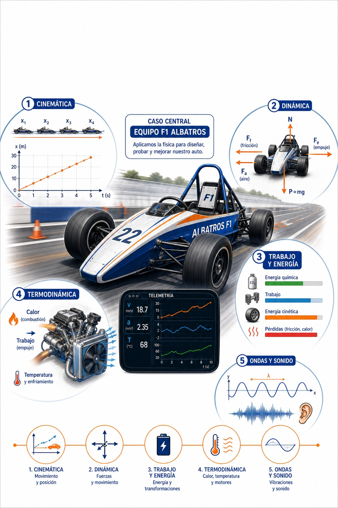
Semestre 1: mecánica, energía, termodinámica, ondas y sonido aplicadas al diseño de un coche F1 escolar.
Manual 2 / Semestre 1
Este primer manual te ayudará a comprender las bases de la física y funciona como complemento de tu aprendizaje. La continuidad del proyecto llegará en el siguiente semestre, pero este tramo ya se trabaja como una ruta completa: leer, medir, calcular, comprobar y decidir.
Manual 2 / Semestre 1
El semestre avanza como una pista de pruebas: primero se mide el movimiento, luego se explican fuerzas, energía, calor y sonido hasta cerrar con una decisión técnica.
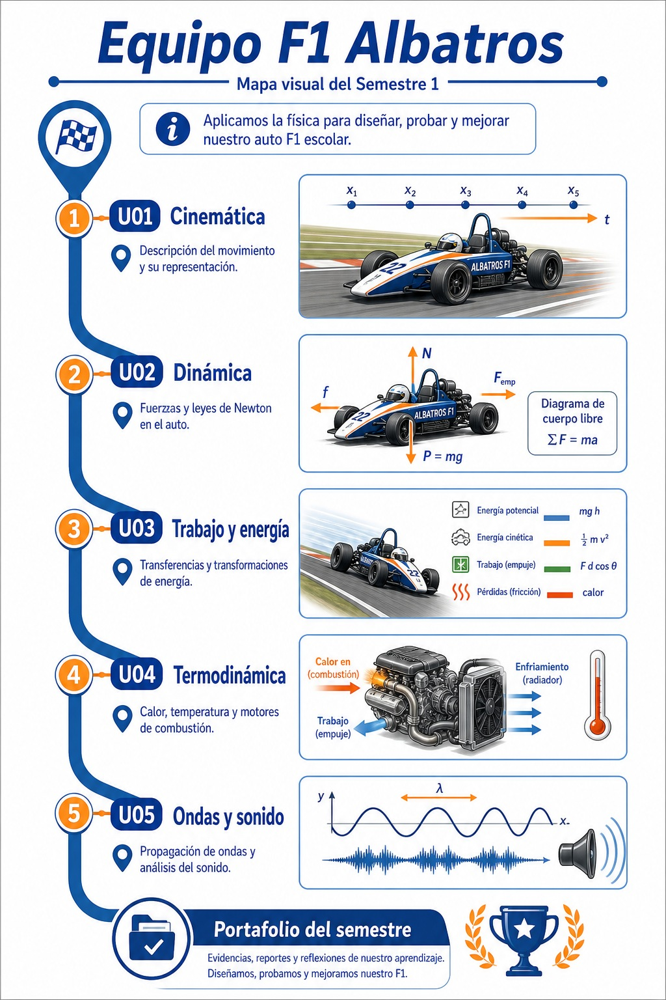
Cada unidad agrega una herramienta distinta; juntas forman la lectura física del prototipo.
Caso conductor
La escuela quiere competir con un coche F1 escolar. El reto parece de diseño, pero pronto se vuelve físico: el coche debe acelerar, resistir fuerzas, usar energía con eficiencia, controlar calor y reducir ruido o vibraciones.
La historia del semestre no se cuenta como teoría aislada. Cada unidad agrega una herramienta para mejorar el prototipo: primero se mide el movimiento, después se interpretan fuerzas, se revisan pérdidas de energía, se controla la temperatura y finalmente se escucha el comportamiento del coche.
Registrar posición, tiempo, fuerza, energía, temperatura y frecuencia con unidades claras.
Convertir el fenómeno físico en diagrama, gráfica, ecuación o tabla de datos.
Sustituir datos con unidades y revisar si el resultado tiene sentido físico.
Usar mini actividades, bancos y prácticas para defender una decisión del equipo.
Integrar evidencia en el diseño del coche F1 escolar del Colegio Nuevo Tecno.
Diagnóstico inicial
Responde sin buscar todavía. Estas preguntas permiten ubicar tus ideas previas antes de usar fórmulas o gráficas.
1. ¿Qué diferencia hay entre distancia recorrida y desplazamiento?
2. ¿Por qué una fuerza necesita dirección para estar completa?
3. ¿Cómo sabes si una energía se conserva o se disipa?
4. ¿Qué cambia cuando una medición de temperatura se expresa en kelvin?
5. ¿Qué dato de una onda permite relacionar frecuencia y longitud de onda?
6. ¿Qué evidencia pedirías antes de modificar el diseño del coche F1?
Unidad 1 / Cinemática
El primer prototipo del coche F1 cruza la pista y todos celebran, pero nadie sabe si realmente mejoró. La historia cambia cuando el equipo coloca marcas en la pista, registra tiempos y transforma el recorrido en datos.
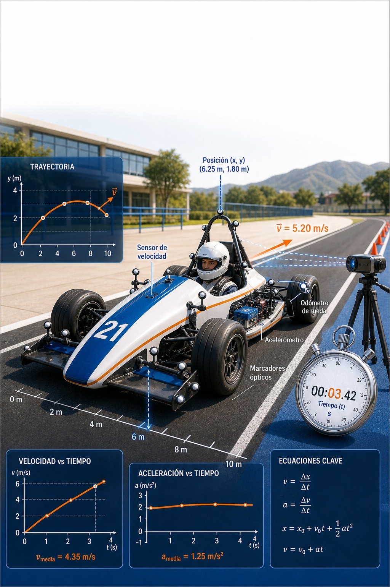
La telemetría no vuelve más rápido al coche por sí sola; permite saber dónde acelera, dónde pierde velocidad y qué tramo conviene corregir.
Antes de resolver, escribe qué variable del coche F1 se debe medir primero y qué instrumento escolar permitiría obtenerla con unidad.
Unidad 1 / Cinemática
Desde Galileo, estudiar movimiento significa comparar posiciones y tiempos. Una caída, un tiro o un coche en línea recta se vuelven comprensibles cuando se elige un sistema de referencia y se registra cómo cambia la posición.
En esta unidad el coche F1 sirve para distinguir distancia, desplazamiento, velocidad, aceleración y trayectorias. La meta no es memorizar ecuaciones: es saber cuándo cada ecuación describe el movimiento observado.
1. ¿Puede un coche recorrer distancia y terminar con desplazamiento cero?
2. ¿Qué diferencia ves entre rapidez y velocidad?
3. ¿Cómo una gráfica puede mostrar aceleración sin mirar el coche?
Unidad 1 / Cinemática
En el caso del coche F1, ruta de decisiones de la cinemática deja de ser una definición de cuaderno: se convierte en una forma de decidir qué medir, qué comparar y qué cambio del prototipo se puede justificar.
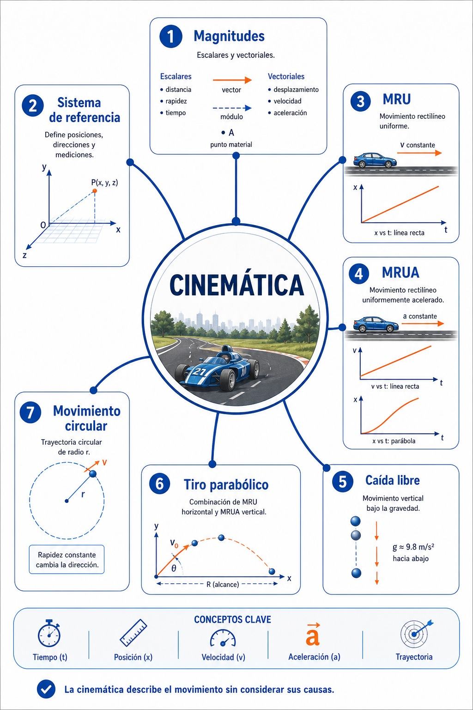
La pista se vuelve legible cuando cada tramo tiene una pregunta de medición.
Unidad 1 / Cinemática
En el caso del coche F1, magnitudes escalares y vectoriales deja de ser una definición de cuaderno: se convierte en una forma de decidir qué medir, qué comparar y qué cambio del prototipo se puede justificar.
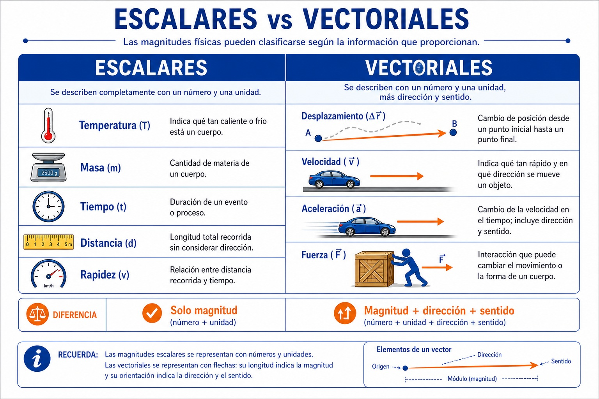
Una cantidad sin dirección puede informar; una cantidad con dirección puede decidir.
Unidad 1 / Cinemática
En el caso del coche F1, magnitudes escalares y vectoriales deja de ser una definición de cuaderno: se convierte en una forma de decidir qué medir, qué comparar y qué cambio del prototipo se puede justificar.
Magnitudes escalares y vectoriales se usa para traducir una situación del coche en una magnitud medible.
Trabajar con física es como leer la pista por capas: primero ubicas la situación, luego eliges el dato y al final verificas el cambio.
Aceleración promedio: a = Δv / Δt. a se expresa en m/s²; Δv es cambio de velocidad y Δt tiempo transcurrido.
MRU: x = x0 + vt. Antes de sustituir, revisa que las unidades sean compatibles.
Completa la tabla para estudiar magnitudes escalares y vectoriales. Registra un ejemplo del coche, la magnitud, la unidad correcta y una conclusión breve.
| Ejemplo del caso | Magnitud | Unidad | Conclusión |
|---|---|---|---|
Unidad 1 / Cinemática
En el caso del coche F1, sistema de referencia, posición y desplazamiento deja de ser una definición de cuaderno: se convierte en una forma de decidir qué medir, qué comparar y qué cambio del prototipo se puede justificar.
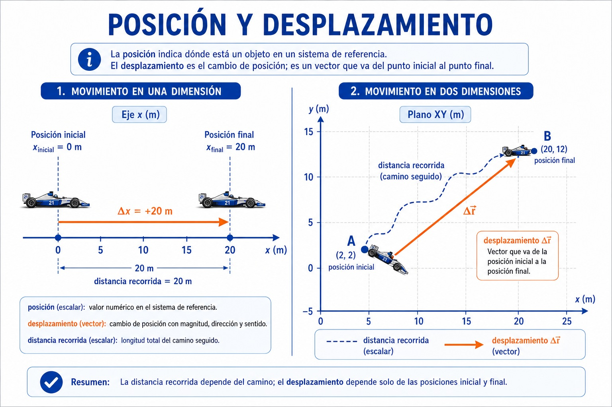
Moverse no siempre significa alejarse: por eso posición y desplazamiento no se confunden.
Construye una versión pequeña del caso: elige una medición relacionada con sistema de referencia, posición y desplazamiento, anota unidad, instrumento y cómo la usarías para mejorar el coche.
Unidad 1 / Cinemática
En el caso del coche F1, sistema de referencia, posición y desplazamiento deja de ser una definición de cuaderno: se convierte en una forma de decidir qué medir, qué comparar y qué cambio del prototipo se puede justificar.
Sistema de referencia, posición y desplazamiento se usa para traducir una situación del coche en una magnitud medible.
Trabajar con física es como leer la pista por capas: primero ubicas la situación, luego eliges el dato y al final verificas el cambio.
MRU: x = x0 + vt. x y x0 están en metros; v en m/s; t en segundos.
MRUA: v = v0 + at. Antes de sustituir, revisa que las unidades sean compatibles.
Relaciona la Columna A con la Columna B. Escribe parejas en formato A-__, B-__, C-__, D-__. Usa la teoría de sistema de referencia, posición y desplazamiento para justificar una pareja.
| Columna A: letras | Columna B: números |
|---|---|
| A. Magnitud física | 1. Se escribe antes de sustituir valores. |
| B. Unidad compatible | 2. Puede ser gráfica, vector, tabla o ecuación. |
| C. Representación útil | 3. Debe coincidir con la fórmula usada. |
| D. Error frecuente | 4. Confundir escalar con vector o mezclar unidades. |
Unidad 1 / Cinemática
En el caso del coche F1, movimiento rectilíneo uniforme deja de ser una definición de cuaderno: se convierte en una forma de decidir qué medir, qué comparar y qué cambio del prototipo se puede justificar.
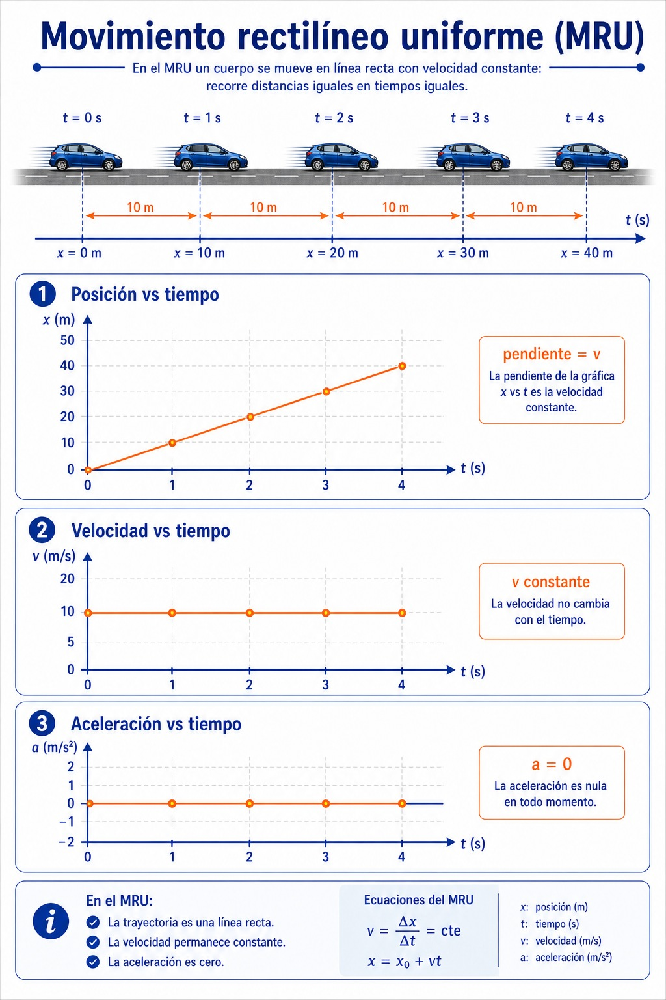
En MRU la constancia es la pista: si la pendiente no cambia, la velocidad tampoco.
Unidad 1 / Cinemática
En el caso del coche F1, movimiento rectilíneo uniforme deja de ser una definición de cuaderno: se convierte en una forma de decidir qué medir, qué comparar y qué cambio del prototipo se puede justificar.
Movimiento rectilíneo uniforme se usa para traducir una situación del coche en una magnitud medible.
Trabajar con física es como leer la pista por capas: primero ubicas la situación, luego eliges el dato y al final verificas el cambio.
MRUA: v = v0 + at. v y v0 están en m/s; a en m/s²; t en segundos.
Posición en MRUA: x = x0 + v0t + 1/2 at². Antes de sustituir, revisa que las unidades sean compatibles.
Compara Movimiento rectilíneo uniforme en un prototipo lento y en un prototipo rápido. Usa como criterios: variable medida, unidad, gráfica esperada, fórmula útil y decisión de diseño.
| Criterio | Prototipo lento | Prototipo rápido | Decisión |
|---|---|---|---|
| Variable medida | |||
| Unidad | |||
| Gráfica o diagrama | |||
| Fórmula útil |
Unidad 1 / Cinemática
En el caso del coche F1, movimiento rectilíneo uniformemente acelerado deja de ser una definición de cuaderno: se convierte en una forma de decidir qué medir, qué comparar y qué cambio del prototipo se puede justificar.
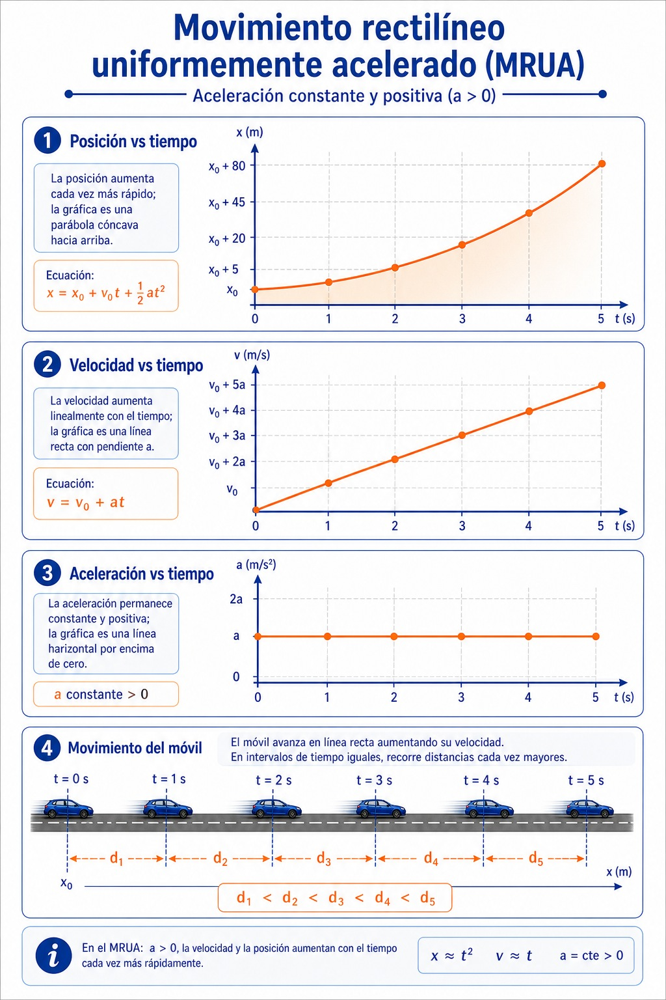
Acelerar es cambiar la historia de la velocidad, no solo ir rápido.
Unidad 1 / Cinemática
En el caso del coche F1, movimiento rectilíneo uniformemente acelerado deja de ser una definición de cuaderno: se convierte en una forma de decidir qué medir, qué comparar y qué cambio del prototipo se puede justificar.
Movimiento rectilíneo uniformemente acelerado se usa para traducir una situación del coche en una magnitud medible.
Trabajar con física es como leer la pista por capas: primero ubicas la situación, luego eliges el dato y al final verificas el cambio.
Posición en MRUA: x = x0 + v0t + 1/2 at². Usa metros, segundos y m/s² de forma compatible.
Movimiento circular: ac = v² / r. Antes de sustituir, revisa que las unidades sean compatibles.
1. ¿Qué dato de movimiento rectilíneo uniformemente acelerado pedirías antes de aceptar una mejora del coche?
2. ¿Qué error de medición podría cambiar la conclusión?
3. ¿Cómo explicarías el resultado a alguien que no vio el experimento?
Unidad 1 / Cinemática
En el caso del coche F1, caída libre y tiro vertical deja de ser una definición de cuaderno: se convierte en una forma de decidir qué medir, qué comparar y qué cambio del prototipo se puede justificar.
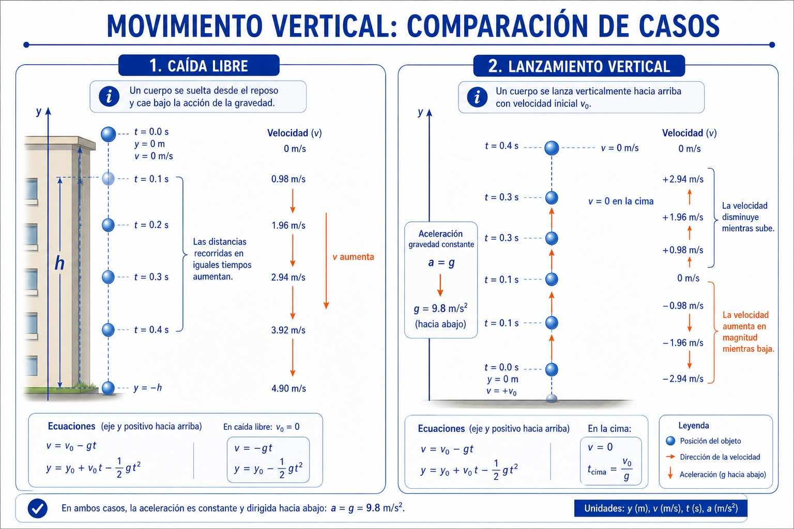
La gravedad no empuja con reloj visible, pero deja marcas cada vez más separadas.
Construye una versión pequeña del caso: elige una medición relacionada con caída libre y tiro vertical, anota unidad, instrumento y cómo la usarías para mejorar el coche.
Unidad 1 / Cinemática
En el caso del coche F1, caída libre y tiro vertical deja de ser una definición de cuaderno: se convierte en una forma de decidir qué medir, qué comparar y qué cambio del prototipo se puede justificar.
Caída libre y tiro vertical se usa para traducir una situación del coche en una magnitud medible.
Trabajar con física es como leer la pista por capas: primero ubicas la situación, luego eliges el dato y al final verificas el cambio.
Movimiento circular: ac = v² / r. ac está en m/s²; v en m/s; r en metros.
Velocidad promedio: v = Δx / Δt. Antes de sustituir, revisa que las unidades sean compatibles.
Redacta una explicación breve de caída libre y tiro vertical. Debe contener una analogía, una magnitud con unidad, una fórmula o diagrama y una decisión para el Equipo F1 Albatros.
Unidad 1 / Cinemática
En el caso del coche F1, movimiento parabólico deja de ser una definición de cuaderno: se convierte en una forma de decidir qué medir, qué comparar y qué cambio del prototipo se puede justificar.
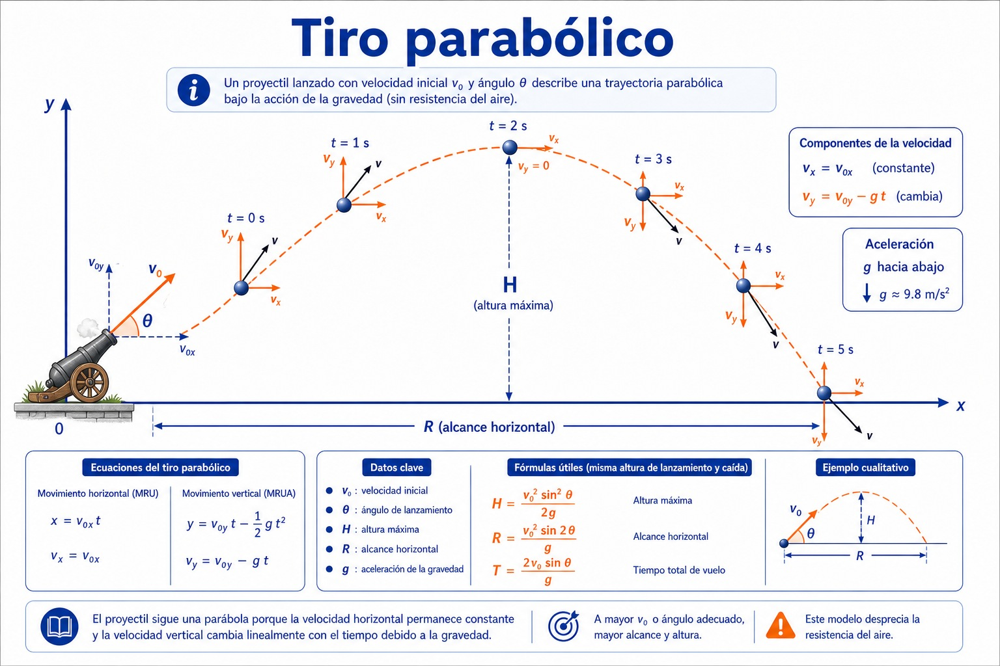
Una trayectoria curva se entiende separando lo horizontal de lo vertical.
Unidad 1 / Cinemática
En el caso del coche F1, movimiento parabólico deja de ser una definición de cuaderno: se convierte en una forma de decidir qué medir, qué comparar y qué cambio del prototipo se puede justificar.
Movimiento parabólico se usa para traducir una situación del coche en una magnitud medible.
Trabajar con física es como leer la pista por capas: primero ubicas la situación, luego eliges el dato y al final verificas el cambio.
Velocidad promedio: v = Δx / Δt. v se expresa en m/s; Δx es desplazamiento en metros y Δt es tiempo en segundos.
Aceleración promedio: a = Δv / Δt. Antes de sustituir, revisa que las unidades sean compatibles.
Usa la relación v = Δx / Δt para crear un dato del coche F1. Debes escribir fórmula, sustitución, resultado y unidad final.
Unidad 1 / Cinemática
En el caso del coche F1, movimiento circular uniforme deja de ser una definición de cuaderno: se convierte en una forma de decidir qué medir, qué comparar y qué cambio del prototipo se puede justificar.
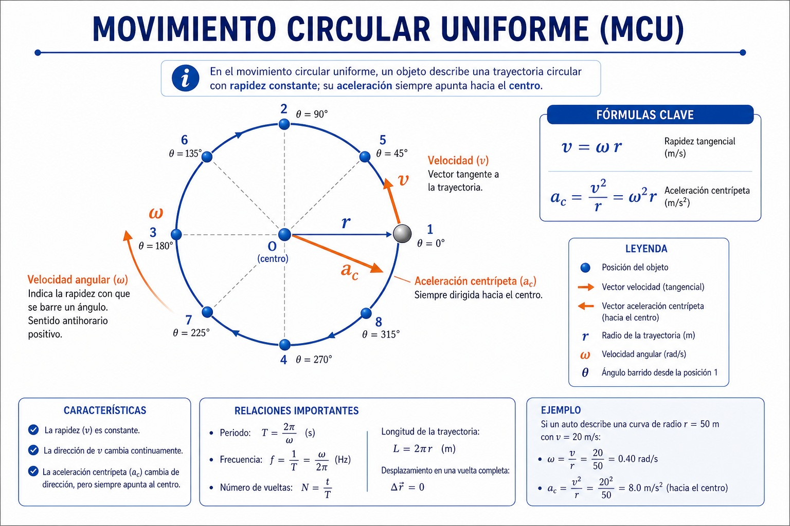
Girar exige aceleración aunque la rapidez parezca constante.
Unidad 1 / Cinemática
En el caso del coche F1, movimiento circular uniforme deja de ser una definición de cuaderno: se convierte en una forma de decidir qué medir, qué comparar y qué cambio del prototipo se puede justificar.
Movimiento circular uniforme se usa para traducir una situación del coche en una magnitud medible.
Trabajar con física es como leer la pista por capas: primero ubicas la situación, luego eliges el dato y al final verificas el cambio.
Aceleración promedio: a = Δv / Δt. a se expresa en m/s²; Δv es cambio de velocidad y Δt tiempo transcurrido.
MRU: x = x0 + vt. Antes de sustituir, revisa que las unidades sean compatibles.
Completa la tabla para estudiar movimiento circular uniforme. Registra un ejemplo del coche, la magnitud, la unidad correcta y una conclusión breve.
| Ejemplo del caso | Magnitud | Unidad | Conclusión |
|---|---|---|---|
Unidad 1 / Cinemática
Una fórmula no es una receta para poner números: expresa qué magnitudes se relacionan y en qué unidades deben estar. Si una unidad no coincide, primero se convierte y después se calcula.
v se expresa en m/s; Δx es desplazamiento en metros y Δt es tiempo en segundos.
a se expresa en m/s²; Δv es cambio de velocidad y Δt tiempo transcurrido.
x y x0 están en metros; v en m/s; t en segundos.
v y v0 están en m/s; a en m/s²; t en segundos.
Usa metros, segundos y m/s² de forma compatible.
ac está en m/s²; v en m/s; r en metros.
Unidad 1 / Cinemática
Resuelve con fórmula, despeje cuando sea necesario, sustitución, resultado, unidades y comprobación del sentido físico.
1. El coche parte de x0 = 0 y llega a x = 18 m en 1.2 s. Calcula velocidad promedio y explica si el dato describe rapidez o velocidad.
2. Un prototipo acelera de 1.5 m/s a 7.5 m/s en 2.0 s. Calcula aceleración promedio con unidades.
Unidad 1 / Cinemática
Resuelve con fórmula, despeje cuando sea necesario, sustitución, resultado, unidades y comprobación del sentido físico.
3. Con v0 = 0, a = 4.0 m/s² y t = 1.8 s, calcula posición usando x = x0 + v0t + 1/2at².
4. Una pieza cae desde reposo durante 0.80 s. Calcula distancia aproximada con g = 9.8 m/s².
Unidad 1 / Cinemática
1. Calcula velocidad promedio si el coche recorre 20 m en 1.25 s.
2. Distingue distancia y desplazamiento en una pista de ida y vuelta de 10 m.
3. Convierte 72 km/h a m/s y explica si la unidad sirve para MRU.
4. Traza una gráfica x-t para un coche que avanza 5 m cada segundo.
Unidad 1 / Cinemática
5. Calcula aceleración si la velocidad cambia de 0 a 8 m/s en 2 s.
6. Usa x = x0 + vt para encontrar la posición a los 3 s si v = 4 m/s.
7. Calcula distancia de caída libre desde reposo durante 1.5 s usando g = 9.8 m/s².
8. Explica por qué en MRU la aceleración es cero.
Unidad 1 / Cinemática
9. Identifica en una gráfica v-t cuándo el coche acelera, frena o mantiene velocidad.
10. Calcula velocidad final con v = v0 + at si v0 = 2 m/s, a = 3 m/s² y t = 4 s.
11. Describe un ejemplo de movimiento parabólico en el lanzamiento de una pieza.
12. Calcula aceleración centrípeta si v = 5 m/s y r = 2 m.
Unidad 1 / Cinemática
Al terminar la unidad, el estudiante puede describir el movimiento del prototipo sin depender de impresiones: usa datos, gráficas y unidades.
Entrega una hoja con evidencia, cálculo, error posible y decisión para el Equipo F1 Albatros.
Unidad 2 / Fuerzas, Newton y Gravitación
El coche ya tiene telemetría, pero ahora aparece otra pregunta: ¿qué lo hace arrancar, frenar, girar o deformarse? El equipo aprende que ningún movimiento cambia sin interacción.
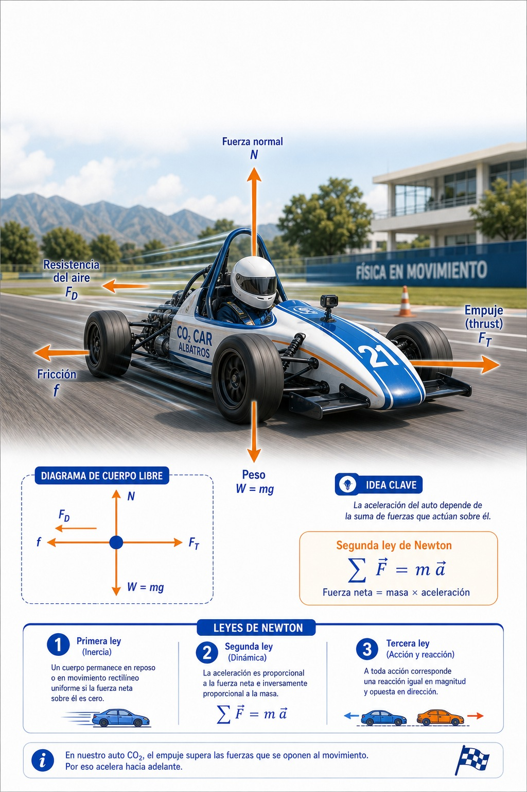
La dinámica convierte la pista en un balance de fuerzas: lo que empuja, lo que se opone y lo que mantiene al prototipo estable.
Antes de resolver, escribe qué variable del coche F1 se debe medir primero y qué instrumento escolar permitiría obtenerla con unidad.
Unidad 2 / Fuerzas, Newton y Gravitación
Newton organizó una idea decisiva: los cambios de movimiento no aparecen de la nada. Si el coche acelera, frena o se desvía, alguna fuerza neta está actuando sobre él.
En esta unidad se usan vectores, leyes de Newton, torque, resortes y gravitación para explicar cómo un prototipo responde a empujes, peso, fricción y equilibrio.
1. ¿Por qué empujar más fuerte no siempre significa acelerar más?
2. ¿Qué fuerzas aparecen en el coche cuando está quieto sobre la pista?
3. ¿Cómo puede un resorte ayudar a medir una fuerza?
Unidad 2 / Fuerzas, Newton y Gravitación
En el caso del coche F1, ruta de decisiones de la dinámica deja de ser una definición de cuaderno: se convierte en una forma de decidir qué medir, qué comparar y qué cambio del prototipo se puede justificar.
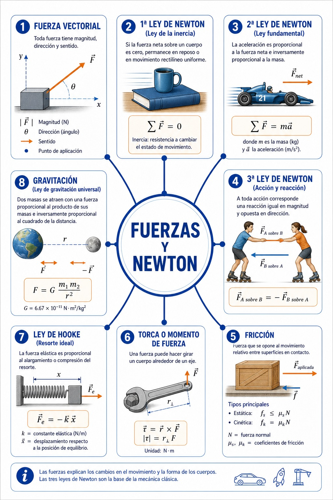
Cada fuerza cuenta una parte de la historia; la suma decide el movimiento.
Unidad 2 / Fuerzas, Newton y Gravitación
En el caso del coche F1, fuerza como vector y diagrama de cuerpo libre deja de ser una definición de cuaderno: se convierte en una forma de decidir qué medir, qué comparar y qué cambio del prototipo se puede justificar.
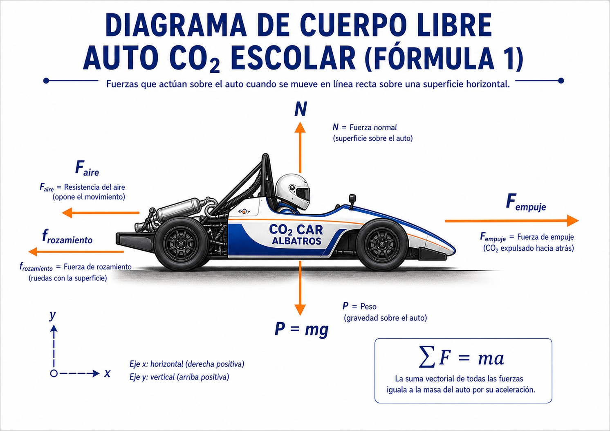
Una flecha bien dibujada puede evitar una conclusión mal calculada.
Unidad 2 / Fuerzas, Newton y Gravitación
En el caso del coche F1, fuerza como vector y diagrama de cuerpo libre deja de ser una definición de cuaderno: se convierte en una forma de decidir qué medir, qué comparar y qué cambio del prototipo se puede justificar.
Fuerza como vector y diagrama de cuerpo libre se usa para traducir una situación del coche en una magnitud medible.
Trabajar con física es como leer la pista por capas: primero ubicas la situación, luego eliges el dato y al final verificas el cambio.
Peso: W = mg. W en N; m en kg; g ≈ 9.8 m/s².
Fricción: f = μN. Antes de sustituir, revisa que las unidades sean compatibles.
Completa la tabla para estudiar fuerza como vector y diagrama de cuerpo libre. Registra un ejemplo del coche, la magnitud, la unidad correcta y una conclusión breve.
| Ejemplo del caso | Magnitud | Unidad | Conclusión |
|---|---|---|---|
Unidad 2 / Fuerzas, Newton y Gravitación
En el caso del coche F1, primera ley: inercia y equilibrio deja de ser una definición de cuaderno: se convierte en una forma de decidir qué medir, qué comparar y qué cambio del prototipo se puede justificar.
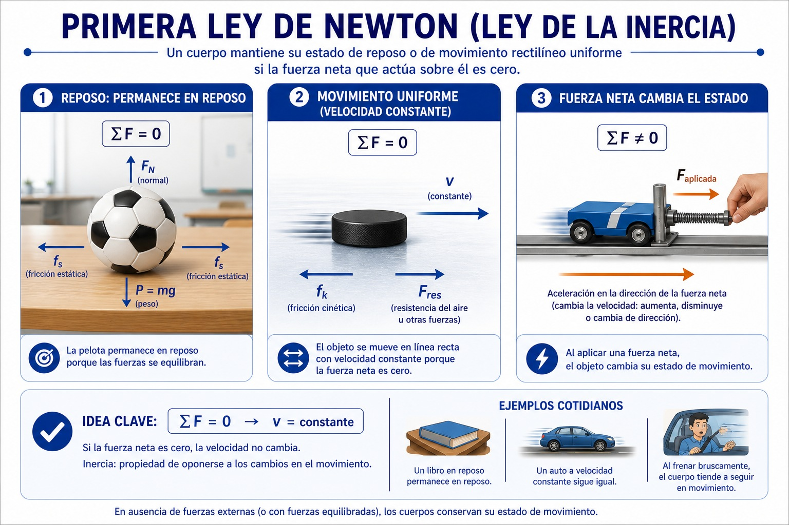
La inercia no es falta de movimiento: es resistencia a cambiar el estado actual.
Construye una versión pequeña del caso: elige una medición relacionada con primera ley: inercia y equilibrio, anota unidad, instrumento y cómo la usarías para mejorar el coche.
Unidad 2 / Fuerzas, Newton y Gravitación
En el caso del coche F1, primera ley: inercia y equilibrio deja de ser una definición de cuaderno: se convierte en una forma de decidir qué medir, qué comparar y qué cambio del prototipo se puede justificar.
Primera ley: inercia y equilibrio se usa para traducir una situación del coche en una magnitud medible.
Trabajar con física es como leer la pista por capas: primero ubicas la situación, luego eliges el dato y al final verificas el cambio.
Fricción: f = μN. f y N en newton; μ no tiene unidad.
Torque: τ = Fr senθ. Antes de sustituir, revisa que las unidades sean compatibles.
Relaciona la Columna A con la Columna B. Escribe parejas en formato A-__, B-__, C-__, D-__. Usa la teoría de primera ley: inercia y equilibrio para justificar una pareja.
| Columna A: letras | Columna B: números |
|---|---|
| A. Magnitud física | 1. Se escribe antes de sustituir valores. |
| B. Unidad compatible | 2. Puede ser gráfica, vector, tabla o ecuación. |
| C. Representación útil | 3. Debe coincidir con la fórmula usada. |
| D. Error frecuente | 4. Confundir escalar con vector o mezclar unidades. |
Unidad 2 / Fuerzas, Newton y Gravitación
En el caso del coche F1, segunda ley de newton deja de ser una definición de cuaderno: se convierte en una forma de decidir qué medir, qué comparar y qué cambio del prototipo se puede justificar.
La segunda ley une lo que empuja con lo que cambia.
Unidad 2 / Fuerzas, Newton y Gravitación
En el caso del coche F1, segunda ley de newton deja de ser una definición de cuaderno: se convierte en una forma de decidir qué medir, qué comparar y qué cambio del prototipo se puede justificar.
Segunda ley de Newton se usa para traducir una situación del coche en una magnitud medible.
Trabajar con física es como leer la pista por capas: primero ubicas la situación, luego eliges el dato y al final verificas el cambio.
Torque: τ = Fr senθ. τ en N·m; F en N; r en m.
Hooke: F = kx. Antes de sustituir, revisa que las unidades sean compatibles.
Compara Segunda ley de Newton en un prototipo lento y en un prototipo rápido. Usa como criterios: variable medida, unidad, gráfica esperada, fórmula útil y decisión de diseño.
| Criterio | Prototipo lento | Prototipo rápido | Decisión |
|---|---|---|---|
| Variable medida | |||
| Unidad | |||
| Gráfica o diagrama | |||
| Fórmula útil |
Unidad 2 / Fuerzas, Newton y Gravitación
En el caso del coche F1, tercera ley: acción y reacción deja de ser una definición de cuaderno: se convierte en una forma de decidir qué medir, qué comparar y qué cambio del prototipo se puede justificar.
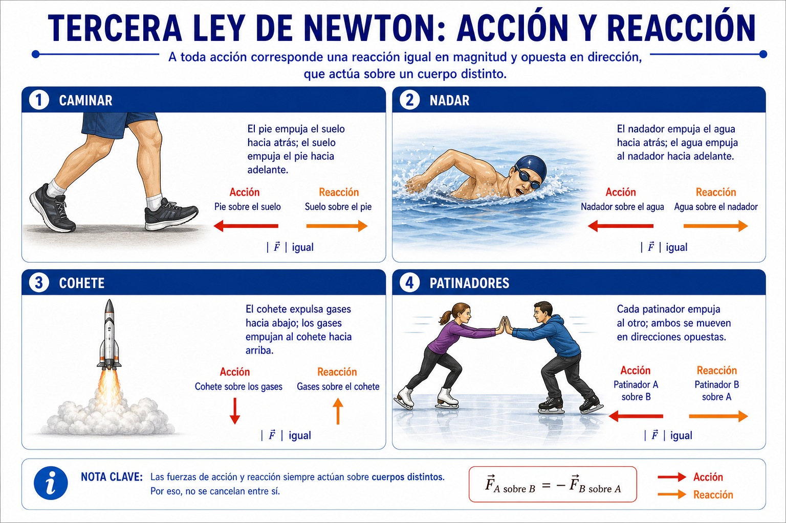
Toda interacción tiene dos lados, aunque el efecto en cada cuerpo sea distinto.
Construye una versión pequeña del caso: elige una medición relacionada con tercera ley: acción y reacción, anota unidad, instrumento y cómo la usarías para mejorar el coche.
Unidad 2 / Fuerzas, Newton y Gravitación
En el caso del coche F1, tercera ley: acción y reacción deja de ser una definición de cuaderno: se convierte en una forma de decidir qué medir, qué comparar y qué cambio del prototipo se puede justificar.
Tercera ley: acción y reacción se usa para traducir una situación del coche en una magnitud medible.
Trabajar con física es como leer la pista por capas: primero ubicas la situación, luego eliges el dato y al final verificas el cambio.
Hooke: F = kx. F en N; k en N/m; x en m.
Gravitación: F = Gm1m2 / r². Antes de sustituir, revisa que las unidades sean compatibles.
1. ¿Qué dato de tercera ley: acción y reacción pedirías antes de aceptar una mejora del coche?
2. ¿Qué error de medición podría cambiar la conclusión?
3. ¿Cómo explicarías el resultado a alguien que no vio el experimento?
Unidad 2 / Fuerzas, Newton y Gravitación
En el caso del coche F1, torque y equilibrio rotacional deja de ser una definición de cuaderno: se convierte en una forma de decidir qué medir, qué comparar y qué cambio del prototipo se puede justificar.
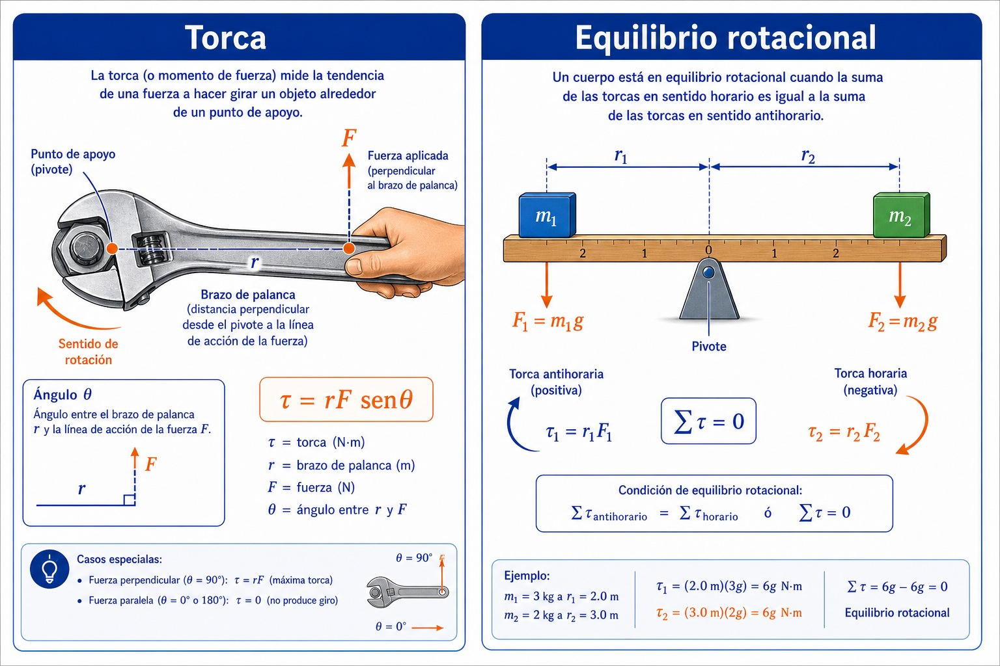
Cuando una fuerza actúa lejos del eje, puede convertir un empuje en giro.
Unidad 2 / Fuerzas, Newton y Gravitación
En el caso del coche F1, torque y equilibrio rotacional deja de ser una definición de cuaderno: se convierte en una forma de decidir qué medir, qué comparar y qué cambio del prototipo se puede justificar.
Torque y equilibrio rotacional se usa para traducir una situación del coche en una magnitud medible.
Trabajar con física es como leer la pista por capas: primero ubicas la situación, luego eliges el dato y al final verificas el cambio.
Gravitación: F = Gm1m2 / r². G = 6.67 x 10^-11 N·m²/kg²; masas en kg; r en m.
Segunda ley: ΣF = ma. Antes de sustituir, revisa que las unidades sean compatibles.
Redacta una explicación breve de torque y equilibrio rotacional. Debe contener una analogía, una magnitud con unidad, una fórmula o diagrama y una decisión para el Equipo F1 Albatros.
Unidad 2 / Fuerzas, Newton y Gravitación
En el caso del coche F1, ley de hooke deja de ser una definición de cuaderno: se convierte en una forma de decidir qué medir, qué comparar y qué cambio del prototipo se puede justificar.
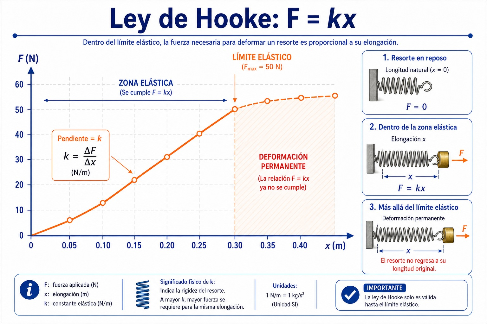
Un resorte traduce deformación en fuerza medible.
Unidad 2 / Fuerzas, Newton y Gravitación
En el caso del coche F1, ley de hooke deja de ser una definición de cuaderno: se convierte en una forma de decidir qué medir, qué comparar y qué cambio del prototipo se puede justificar.
Ley de Hooke se usa para traducir una situación del coche en una magnitud medible.
Trabajar con física es como leer la pista por capas: primero ubicas la situación, luego eliges el dato y al final verificas el cambio.
Segunda ley: ΣF = ma. ΣF en N; m en kg; a en m/s².
Peso: W = mg. Antes de sustituir, revisa que las unidades sean compatibles.
Usa la relación ΣF = ma para crear un dato del coche F1. Debes escribir fórmula, sustitución, resultado y unidad final.
Unidad 2 / Fuerzas, Newton y Gravitación
En el caso del coche F1, gravitación universal deja de ser una definición de cuaderno: se convierte en una forma de decidir qué medir, qué comparar y qué cambio del prototipo se puede justificar.
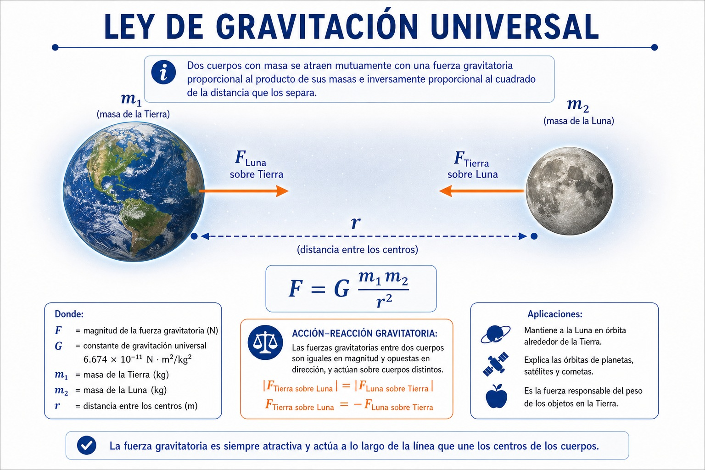
La gravedad aparece pequeña en el prototipo y enorme en el sistema solar.
Unidad 2 / Fuerzas, Newton y Gravitación
En el caso del coche F1, gravitación universal deja de ser una definición de cuaderno: se convierte en una forma de decidir qué medir, qué comparar y qué cambio del prototipo se puede justificar.
Gravitación universal se usa para traducir una situación del coche en una magnitud medible.
Trabajar con física es como leer la pista por capas: primero ubicas la situación, luego eliges el dato y al final verificas el cambio.
Peso: W = mg. W en N; m en kg; g ≈ 9.8 m/s².
Fricción: f = μN. Antes de sustituir, revisa que las unidades sean compatibles.
Completa la tabla para estudiar gravitación universal. Registra un ejemplo del coche, la magnitud, la unidad correcta y una conclusión breve.
| Ejemplo del caso | Magnitud | Unidad | Conclusión |
|---|---|---|---|
Unidad 2 / Fuerzas, Newton y Gravitación
En el caso del coche F1, leyes de kepler deja de ser una definición de cuaderno: se convierte en una forma de decidir qué medir, qué comparar y qué cambio del prototipo se puede justificar.
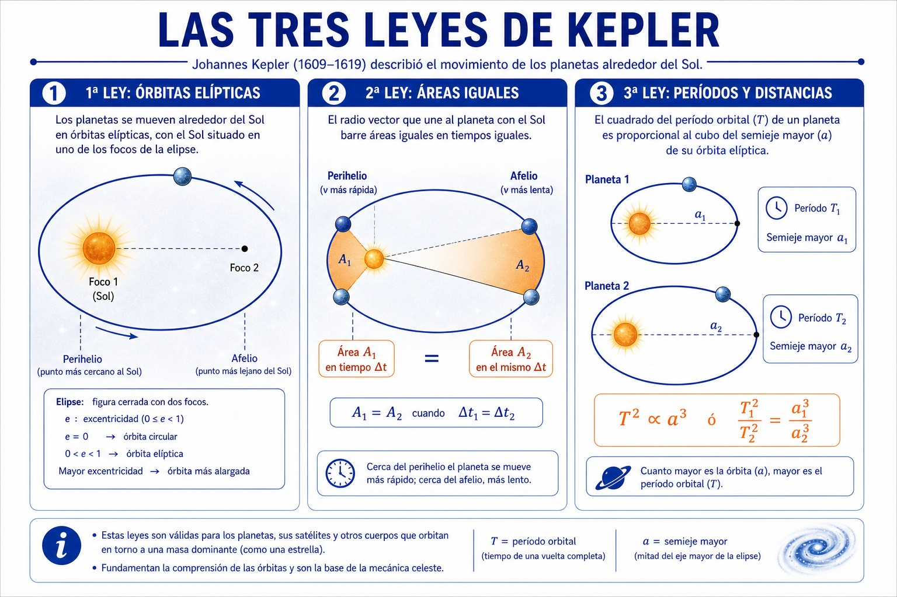
Las órbitas muestran que una misma idea física puede cruzar escalas.
Unidad 2 / Fuerzas, Newton y Gravitación
En el caso del coche F1, leyes de kepler deja de ser una definición de cuaderno: se convierte en una forma de decidir qué medir, qué comparar y qué cambio del prototipo se puede justificar.
Leyes de Kepler se usa para traducir una situación del coche en una magnitud medible.
Trabajar con física es como leer la pista por capas: primero ubicas la situación, luego eliges el dato y al final verificas el cambio.
Fricción: f = μN. f y N en newton; μ no tiene unidad.
Torque: τ = Fr senθ. Antes de sustituir, revisa que las unidades sean compatibles.
Relaciona la Columna A con la Columna B. Escribe parejas en formato A-__, B-__, C-__, D-__. Usa la teoría de leyes de kepler para justificar una pareja.
| Columna A: letras | Columna B: números |
|---|---|
| A. Magnitud física | 1. Se escribe antes de sustituir valores. |
| B. Unidad compatible | 2. Puede ser gráfica, vector, tabla o ecuación. |
| C. Representación útil | 3. Debe coincidir con la fórmula usada. |
| D. Error frecuente | 4. Confundir escalar con vector o mezclar unidades. |
Unidad 2 / Fuerzas, Newton y Gravitación
Una fórmula no es una receta para poner números: expresa qué magnitudes se relacionan y en qué unidades deben estar. Si una unidad no coincide, primero se convierte y después se calcula.
ΣF en N; m en kg; a en m/s².
W en N; m en kg; g ≈ 9.8 m/s².
f y N en newton; μ no tiene unidad.
τ en N·m; F en N; r en m.
F en N; k en N/m; x en m.
G = 6.67 x 10^-11 N·m²/kg²; masas en kg; r en m.
Unidad 2 / Fuerzas, Newton y Gravitación
Resuelve con fórmula, despeje cuando sea necesario, sustitución, resultado, unidades y comprobación del sentido físico.
1. Un prototipo de 0.055 kg acelera a 9.0 m/s². Calcula fuerza neta y explica qué interacción podría producirla.
2. El coche pesa 0.62 N. Calcula su masa aproximada con m = W/g.
Unidad 2 / Fuerzas, Newton y Gravitación
Resuelve con fórmula, despeje cuando sea necesario, sustitución, resultado, unidades y comprobación del sentido físico.
3. Si la normal es 0.54 N y μ = 0.18, calcula fricción y decide si conviene revisar ruedas o pista.
4. Un alerón recibe 2.5 N a 0.08 m del eje. Calcula torque máximo.
Unidad 2 / Fuerzas, Newton y Gravitación
1. Calcula fuerza neta para m = 0.050 kg y a = 12 m/s².
2. Calcula peso de un coche de 0.060 kg usando g = 9.8 m/s².
3. Dibuja el diagrama de cuerpo libre de un coche que acelera en línea recta.
4. Explica qué ley de Newton aparece cuando el coche no arranca aunque se empuje poco.
Unidad 2 / Fuerzas, Newton y Gravitación
5. Calcula fricción si μ = 0.20 y N = 0.60 N.
6. Compara masa y peso con ejemplo del prototipo.
7. Calcula torque con F = 3 N, r = 0.12 m y θ = 90°.
8. Calcula fuerza de un resorte con k = 120 N/m y x = 0.03 m.
Unidad 2 / Fuerzas, Newton y Gravitación
9. Explica por qué acción y reacción no se cancelan si actúan en cuerpos distintos.
10. Relaciona fuerza centrípeta con una curva de radio pequeño.
11. Describe una situación de equilibrio traslacional en el coche.
12. Explica por qué la gravedad universal importa aunque el coche sea pequeño.
Unidad 2 / Fuerzas, Newton y Gravitación
Al terminar la unidad, el estudiante interpreta el cambio de movimiento como resultado de fuerzas, no como simple apariencia de rapidez.
Entrega una hoja con evidencia, cálculo, error posible y decisión para el Equipo F1 Albatros.
Unidad 3 / Trabajo y Energía
Dos prototipos llegan casi al mismo tiempo, pero uno vibra más, se calienta y pierde velocidad al final. El equipo descubre que la pregunta no es solo cuánto corre, sino cuánta energía conserva.
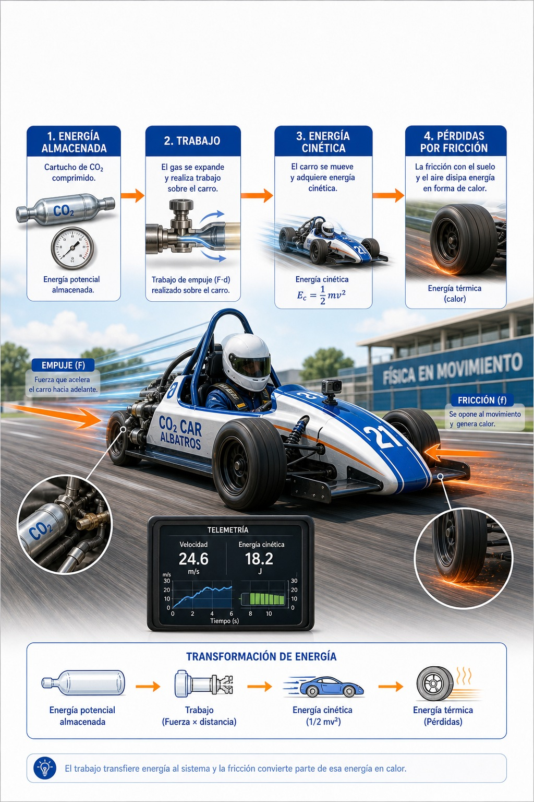
La energía permite rastrear lo útil y lo perdido: movimiento, altura, deformación, fricción, impacto y potencia.
Antes de resolver, escribe qué variable del coche F1 se debe medir primero y qué instrumento escolar permitiría obtenerla con unidad.
Unidad 3 / Trabajo y Energía
La idea de conservación permitió explicar máquinas, choques y movimientos sin mirar cada detalle microscópico. En el coche F1, la energía muestra qué parte del impulso termina como avance y qué parte se pierde.
Esta unidad conecta trabajo, potencia, energía cinética, potencial, conservación, ímpetu y colisiones para evaluar el desempeño real del prototipo.
1. ¿Puede un coche tener mucha energía y aun así perder una carrera?
2. ¿Qué evidencia mostraría que hay fricción importante?
3. ¿Por qué potencia y energía no significan lo mismo?
Unidad 3 / Trabajo y Energía
En el caso del coche F1, ruta de decisiones de energía deja de ser una definición de cuaderno: se convierte en una forma de decidir qué medir, qué comparar y qué cambio del prototipo se puede justificar.
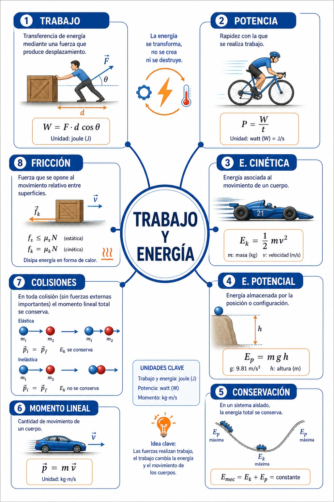
La energía se sigue como una pista: entra, se transforma y deja huellas.
Unidad 3 / Trabajo y Energía
En el caso del coche F1, trabajo mecánico deja de ser una definición de cuaderno: se convierte en una forma de decidir qué medir, qué comparar y qué cambio del prototipo se puede justificar.
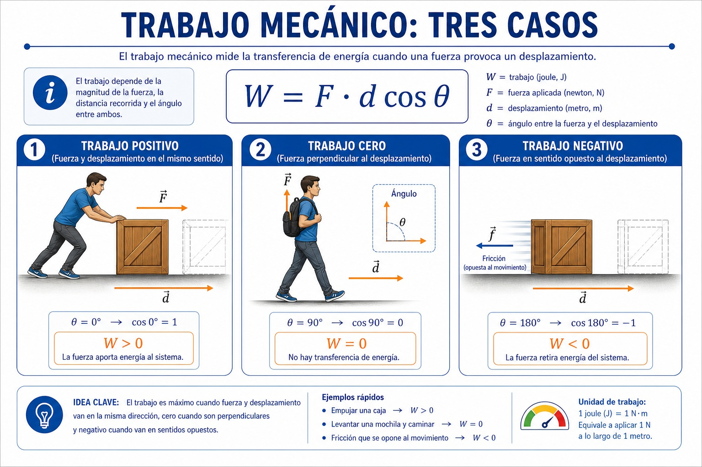
Una fuerza solo realiza trabajo útil si acompaña al desplazamiento.
Construye una versión pequeña del caso: elige una medición relacionada con trabajo mecánico, anota unidad, instrumento y cómo la usarías para mejorar el coche.
Unidad 3 / Trabajo y Energía
En el caso del coche F1, trabajo mecánico deja de ser una definición de cuaderno: se convierte en una forma de decidir qué medir, qué comparar y qué cambio del prototipo se puede justificar.
Trabajo mecánico se usa para traducir una situación del coche en una magnitud medible.
Trabajar con física es como leer la pista por capas: primero ubicas la situación, luego eliges el dato y al final verificas el cambio.
Potencia: P = W / t. P en W; W en joule; t en segundos.
Energía cinética: K = 1/2 mv². Antes de sustituir, revisa que las unidades sean compatibles.
Completa la tabla para estudiar trabajo mecánico. Registra un ejemplo del coche, la magnitud, la unidad correcta y una conclusión breve.
| Ejemplo del caso | Magnitud | Unidad | Conclusión |
|---|---|---|---|
Unidad 3 / Trabajo y Energía
En el caso del coche F1, energía cinética y energía potencial deja de ser una definición de cuaderno: se convierte en una forma de decidir qué medir, qué comparar y qué cambio del prototipo se puede justificar.
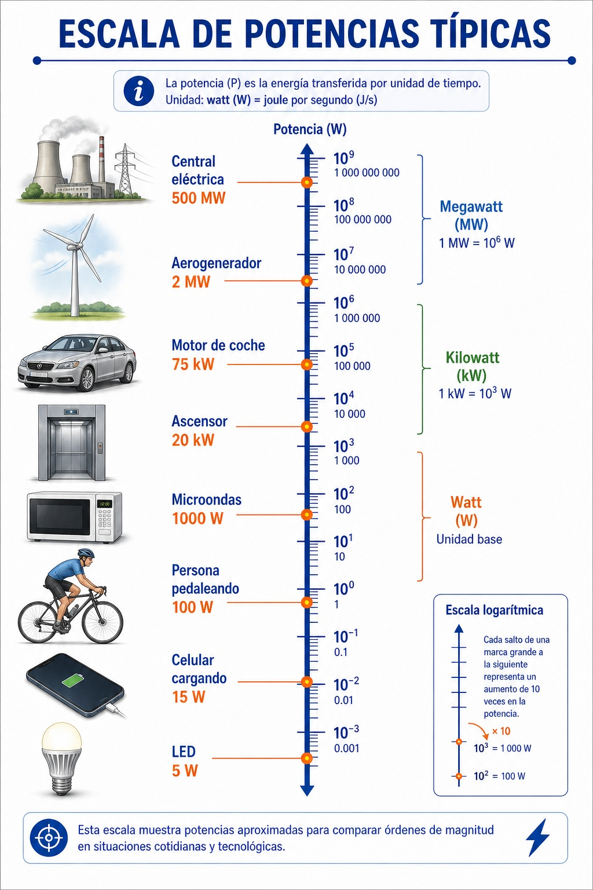
Moverse y estar en posición también son formas de almacenar energía.
Unidad 3 / Trabajo y Energía
En el caso del coche F1, energía cinética y energía potencial deja de ser una definición de cuaderno: se convierte en una forma de decidir qué medir, qué comparar y qué cambio del prototipo se puede justificar.
Energía cinética y energía potencial se usa para traducir una situación del coche en una magnitud medible.
Trabajar con física es como leer la pista por capas: primero ubicas la situación, luego eliges el dato y al final verificas el cambio.
Energía cinética: K = 1/2 mv². K en J; m en kg; v en m/s.
Energía potencial: U = mgh. Antes de sustituir, revisa que las unidades sean compatibles.
Relaciona la Columna A con la Columna B. Escribe parejas en formato A-__, B-__, C-__, D-__. Usa la teoría de energía cinética y energía potencial para justificar una pareja.
| Columna A: letras | Columna B: números |
|---|---|
| A. Magnitud física | 1. Se escribe antes de sustituir valores. |
| B. Unidad compatible | 2. Puede ser gráfica, vector, tabla o ecuación. |
| C. Representación útil | 3. Debe coincidir con la fórmula usada. |
| D. Error frecuente | 4. Confundir escalar con vector o mezclar unidades. |
Unidad 3 / Trabajo y Energía
En el caso del coche F1, gráficas de energía deja de ser una definición de cuaderno: se convierte en una forma de decidir qué medir, qué comparar y qué cambio del prototipo se puede justificar.
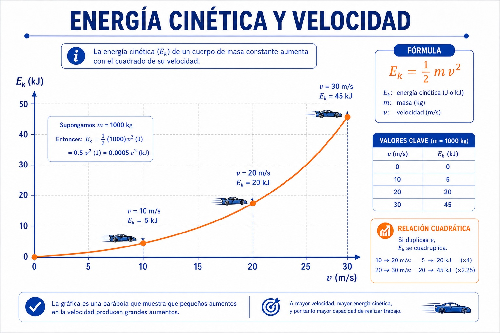
Una gráfica de energía revela pérdidas que el cronómetro no explica solo.
Unidad 3 / Trabajo y Energía
En el caso del coche F1, gráficas de energía deja de ser una definición de cuaderno: se convierte en una forma de decidir qué medir, qué comparar y qué cambio del prototipo se puede justificar.
Gráficas de energía se usa para traducir una situación del coche en una magnitud medible.
Trabajar con física es como leer la pista por capas: primero ubicas la situación, luego eliges el dato y al final verificas el cambio.
Energía potencial: U = mgh. U en J; m en kg; g en m/s²; h en m.
Ímpetu: p = mv. Antes de sustituir, revisa que las unidades sean compatibles.
Compara Gráficas de energía en un prototipo lento y en un prototipo rápido. Usa como criterios: variable medida, unidad, gráfica esperada, fórmula útil y decisión de diseño.
| Criterio | Prototipo lento | Prototipo rápido | Decisión |
|---|---|---|---|
| Variable medida | |||
| Unidad | |||
| Gráfica o diagrama | |||
| Fórmula útil |
Unidad 3 / Trabajo y Energía
En el caso del coche F1, potencia deja de ser una definición de cuaderno: se convierte en una forma de decidir qué medir, qué comparar y qué cambio del prototipo se puede justificar.
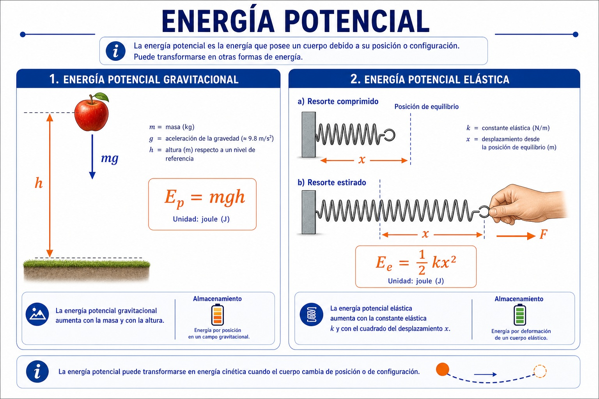
La potencia pregunta qué tan rápido ocurre la transferencia.
Construye una versión pequeña del caso: elige una medición relacionada con potencia, anota unidad, instrumento y cómo la usarías para mejorar el coche.
Unidad 3 / Trabajo y Energía
En el caso del coche F1, potencia deja de ser una definición de cuaderno: se convierte en una forma de decidir qué medir, qué comparar y qué cambio del prototipo se puede justificar.
Potencia se usa para traducir una situación del coche en una magnitud medible.
Trabajar con física es como leer la pista por capas: primero ubicas la situación, luego eliges el dato y al final verificas el cambio.
Ímpetu: p = mv. p en kg·m/s; m en kg; v en m/s.
Impulso: J = FΔt = Δp. Antes de sustituir, revisa que las unidades sean compatibles.
1. ¿Qué dato de potencia pedirías antes de aceptar una mejora del coche?
2. ¿Qué error de medición podría cambiar la conclusión?
3. ¿Cómo explicarías el resultado a alguien que no vio el experimento?
Unidad 3 / Trabajo y Energía
En el caso del coche F1, conservación de energía mecánica deja de ser una definición de cuaderno: se convierte en una forma de decidir qué medir, qué comparar y qué cambio del prototipo se puede justificar.
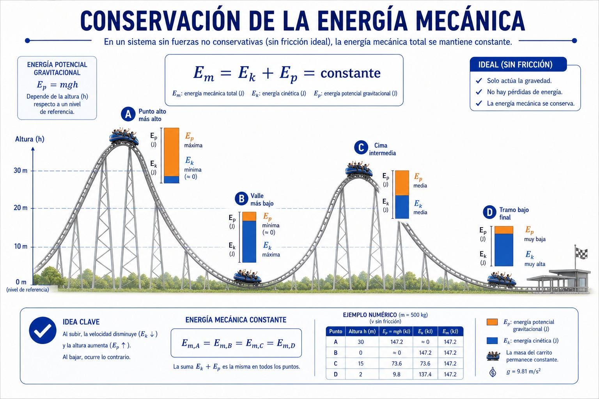
Conservar energía no significa que toda sea útil para ganar.
Unidad 3 / Trabajo y Energía
En el caso del coche F1, conservación de energía mecánica deja de ser una definición de cuaderno: se convierte en una forma de decidir qué medir, qué comparar y qué cambio del prototipo se puede justificar.
Conservación de energía mecánica se usa para traducir una situación del coche en una magnitud medible.
Trabajar con física es como leer la pista por capas: primero ubicas la situación, luego eliges el dato y al final verificas el cambio.
Impulso: J = FΔt = Δp. J en N·s; conecta fuerza aplicada con cambio de ímpetu.
Trabajo: W = Fd cosθ. Antes de sustituir, revisa que las unidades sean compatibles.
Redacta una explicación breve de conservación de energía mecánica. Debe contener una analogía, una magnitud con unidad, una fórmula o diagrama y una decisión para el Equipo F1 Albatros.
Unidad 3 / Trabajo y Energía
En el caso del coche F1, ímpetu e impulso deja de ser una definición de cuaderno: se convierte en una forma de decidir qué medir, qué comparar y qué cambio del prototipo se puede justificar.
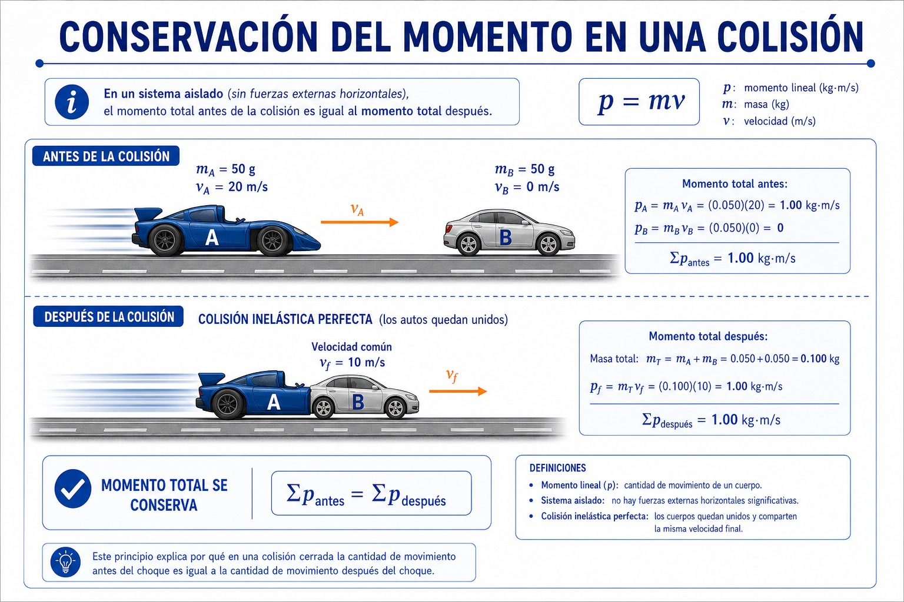
El ímpetu ayuda a leer choques y cambios bruscos de movimiento.
Construye una versión pequeña del caso: elige una medición relacionada con ímpetu e impulso, anota unidad, instrumento y cómo la usarías para mejorar el coche.
Unidad 3 / Trabajo y Energía
En el caso del coche F1, ímpetu e impulso deja de ser una definición de cuaderno: se convierte en una forma de decidir qué medir, qué comparar y qué cambio del prototipo se puede justificar.
Ímpetu e impulso se usa para traducir una situación del coche en una magnitud medible.
Trabajar con física es como leer la pista por capas: primero ubicas la situación, luego eliges el dato y al final verificas el cambio.
Trabajo: W = Fd cosθ. W en J; F en N; d en m; θ es el ángulo entre fuerza y desplazamiento.
Potencia: P = W / t. Antes de sustituir, revisa que las unidades sean compatibles.
Usa la relación W = Fd cosθ para crear un dato del coche F1. Debes escribir fórmula, sustitución, resultado y unidad final.
Unidad 3 / Trabajo y Energía
En el caso del coche F1, colisiones unidimensionales deja de ser una definición de cuaderno: se convierte en una forma de decidir qué medir, qué comparar y qué cambio del prototipo se puede justificar.
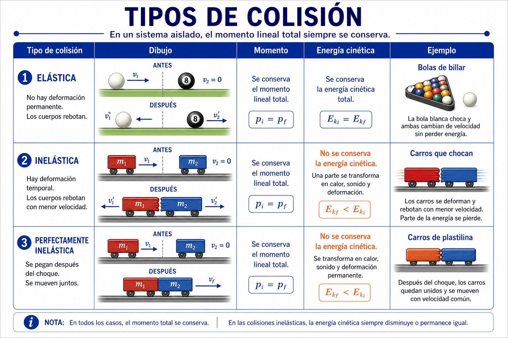
En una colisión, la pregunta es qué se conserva y qué se transforma.
Unidad 3 / Trabajo y Energía
En el caso del coche F1, colisiones unidimensionales deja de ser una definición de cuaderno: se convierte en una forma de decidir qué medir, qué comparar y qué cambio del prototipo se puede justificar.
Colisiones unidimensionales se usa para traducir una situación del coche en una magnitud medible.
Trabajar con física es como leer la pista por capas: primero ubicas la situación, luego eliges el dato y al final verificas el cambio.
Potencia: P = W / t. P en W; W en joule; t en segundos.
Energía cinética: K = 1/2 mv². Antes de sustituir, revisa que las unidades sean compatibles.
Completa la tabla para estudiar colisiones unidimensionales. Registra un ejemplo del coche, la magnitud, la unidad correcta y una conclusión breve.
| Ejemplo del caso | Magnitud | Unidad | Conclusión |
|---|---|---|---|
Unidad 3 / Trabajo y Energía
En el caso del coche F1, procesos disipativos deja de ser una definición de cuaderno: se convierte en una forma de decidir qué medir, qué comparar y qué cambio del prototipo se puede justificar.
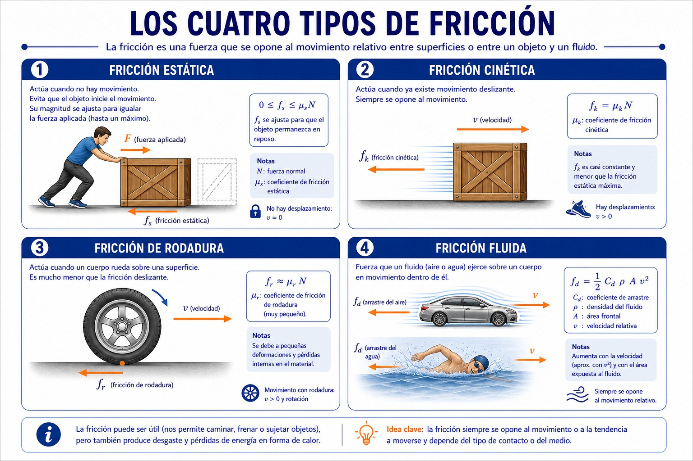
La fricción no roba energía: la cambia a formas menos aprovechables.
Construye una versión pequeña del caso: elige una medición relacionada con procesos disipativos, anota unidad, instrumento y cómo la usarías para mejorar el coche.
Unidad 3 / Trabajo y Energía
En el caso del coche F1, procesos disipativos deja de ser una definición de cuaderno: se convierte en una forma de decidir qué medir, qué comparar y qué cambio del prototipo se puede justificar.
Procesos disipativos se usa para traducir una situación del coche en una magnitud medible.
Trabajar con física es como leer la pista por capas: primero ubicas la situación, luego eliges el dato y al final verificas el cambio.
Energía cinética: K = 1/2 mv². K en J; m en kg; v en m/s.
Energía potencial: U = mgh. Antes de sustituir, revisa que las unidades sean compatibles.
Relaciona la Columna A con la Columna B. Escribe parejas en formato A-__, B-__, C-__, D-__. Usa la teoría de procesos disipativos para justificar una pareja.
| Columna A: letras | Columna B: números |
|---|---|
| A. Magnitud física | 1. Se escribe antes de sustituir valores. |
| B. Unidad compatible | 2. Puede ser gráfica, vector, tabla o ecuación. |
| C. Representación útil | 3. Debe coincidir con la fórmula usada. |
| D. Error frecuente | 4. Confundir escalar con vector o mezclar unidades. |
Unidad 3 / Trabajo y Energía
Una fórmula no es una receta para poner números: expresa qué magnitudes se relacionan y en qué unidades deben estar. Si una unidad no coincide, primero se convierte y después se calcula.
W en J; F en N; d en m; θ es el ángulo entre fuerza y desplazamiento.
P en W; W en joule; t en segundos.
K en J; m en kg; v en m/s.
U en J; m en kg; g en m/s²; h en m.
p en kg·m/s; m en kg; v en m/s.
J en N·s; conecta fuerza aplicada con cambio de ímpetu.
Unidad 3 / Trabajo y Energía
Resuelve con fórmula, despeje cuando sea necesario, sustitución, resultado, unidades y comprobación del sentido físico.
1. Una fuerza de 1.8 N actúa durante 5 m en la dirección del movimiento. Calcula trabajo.
2. El coche recibe 9 J en 1.5 s. Calcula potencia promedio.
Unidad 3 / Trabajo y Energía
Resuelve con fórmula, despeje cuando sea necesario, sustitución, resultado, unidades y comprobación del sentido físico.
3. Calcula K para m = 0.052 kg y v = 7.0 m/s.
4. Calcula U para m = 0.060 kg y h = 0.45 m.
Unidad 3 / Trabajo y Energía
1. Calcula trabajo si una fuerza de 2 N desplaza el coche 4 m en la misma dirección.
2. Calcula potencia si se realizan 12 J en 3 s.
3. Calcula energía cinética de 0.055 kg a 6 m/s.
4. Calcula energía potencial de 0.050 kg a 0.80 m de altura.
Unidad 3 / Trabajo y Energía
5. Explica por qué la fricción convierte energía útil en calor.
6. Compara trabajo positivo, negativo y cero con ejemplos.
7. Calcula ímpetu de 0.060 kg a 5 m/s.
8. Calcula impulso si una fuerza de 1.5 N actúa durante 0.20 s.
Unidad 3 / Trabajo y Energía
9. Describe una colisión elástica y una inelástica en una pista escolar.
10. Interpreta una gráfica donde la energía cinética baja al final.
11. Relaciona potencia con tiempo de carrera.
12. Propón una mejora para disminuir disipación.
Unidad 3 / Trabajo y Energía
Al terminar la unidad, el estudiante puede defender si una modificación mejora el uso de energía o solo cambia la apariencia del prototipo.
Entrega una hoja con evidencia, cálculo, error posible y decisión para el Equipo F1 Albatros.
Unidad 4 / Termodinámica
Después de varias pruebas, una parte del prototipo se siente caliente. El equipo podría ignorarlo, pero el calor cuenta una historia: fricción, energía interna, transferencia y eficiencia.
La termodinámica permite decidir si el prototipo pierde energía en calor, cómo se transfiere y qué medición térmica conviene registrar.
Antes de resolver, escribe qué variable del coche F1 se debe medir primero y qué instrumento escolar permitiría obtenerla con unidad.
Unidad 4 / Termodinámica
La termodinámica nació al intentar entender máquinas, vapor, calor y trabajo. En el aula, esas ideas aparecen cuando una pieza se calienta, un gas cambia de volumen o una superficie transfiere energía.
Esta unidad distingue calor y temperatura, usa escalas termométricas, calcula energía térmica y conecta gases ideales con decisiones de diseño.
1. ¿Por qué no es lo mismo calor que temperatura?
2. ¿Qué pieza del coche podría calentarse por fricción?
3. ¿Por qué kelvin se usa en gases ideales?
Unidad 4 / Termodinámica
En el caso del coche F1, ruta de decisiones térmicas deja de ser una definición de cuaderno: se convierte en una forma de decidir qué medir, qué comparar y qué cambio del prototipo se puede justificar.
El calor deja pistas donde la energía útil se transforma.
Unidad 4 / Termodinámica
En el caso del coche F1, calor y temperatura deja de ser una definición de cuaderno: se convierte en una forma de decidir qué medir, qué comparar y qué cambio del prototipo se puede justificar.
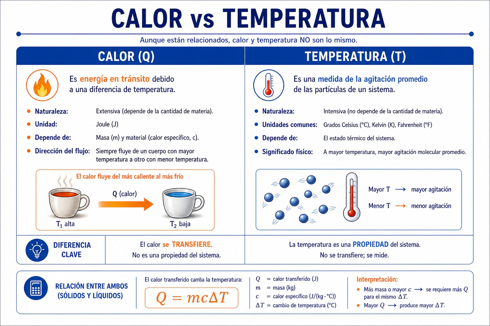
Temperatura es lectura de estado; calor es energía en camino.
Unidad 4 / Termodinámica
En el caso del coche F1, calor y temperatura deja de ser una definición de cuaderno: se convierte en una forma de decidir qué medir, qué comparar y qué cambio del prototipo se puede justificar.
Calor y temperatura se usa para traducir una situación del coche en una magnitud medible.
Trabajar con física es como leer la pista por capas: primero ubicas la situación, luego eliges el dato y al final verificas el cambio.
Fahrenheit: °F = 9/5 °C + 32. Convierte escalas cuando el instrumento reporte otra unidad.
Calor sensible: Q = mcΔT. Antes de sustituir, revisa que las unidades sean compatibles.
Completa la tabla para estudiar calor y temperatura. Registra un ejemplo del coche, la magnitud, la unidad correcta y una conclusión breve.
| Ejemplo del caso | Magnitud | Unidad | Conclusión |
|---|---|---|---|
Unidad 4 / Termodinámica
En el caso del coche F1, equilibrio térmico y ley cero deja de ser una definición de cuaderno: se convierte en una forma de decidir qué medir, qué comparar y qué cambio del prototipo se puede justificar.
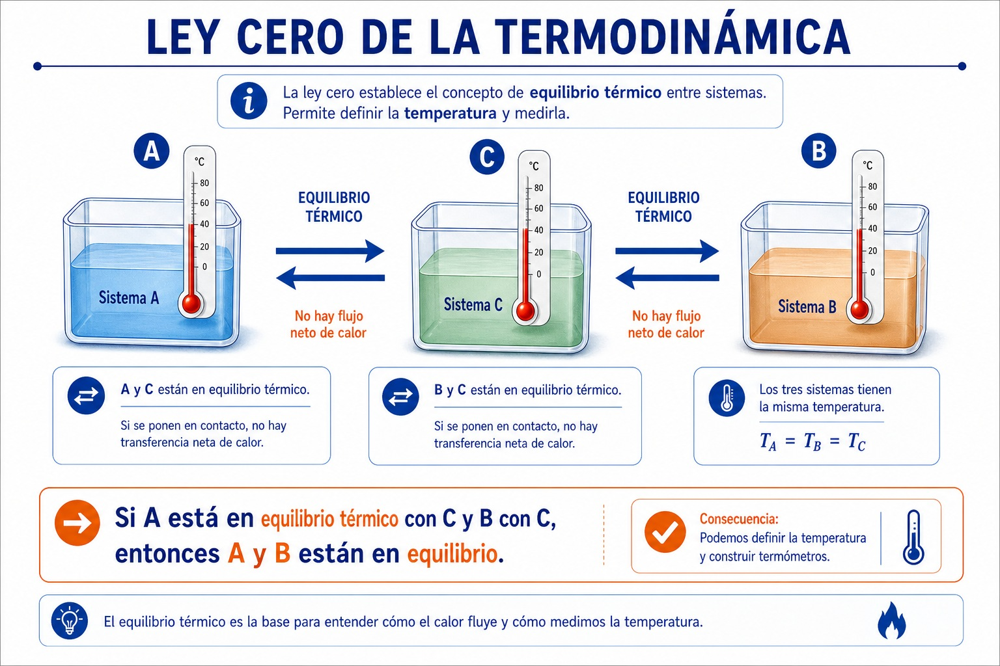
El equilibrio térmico aparece cuando los intercambios dejan de tener dirección neta.
Construye una versión pequeña del caso: elige una medición relacionada con equilibrio térmico y ley cero, anota unidad, instrumento y cómo la usarías para mejorar el coche.
Unidad 4 / Termodinámica
En el caso del coche F1, equilibrio térmico y ley cero deja de ser una definición de cuaderno: se convierte en una forma de decidir qué medir, qué comparar y qué cambio del prototipo se puede justificar.
Equilibrio térmico y ley cero se usa para traducir una situación del coche en una magnitud medible.
Trabajar con física es como leer la pista por capas: primero ubicas la situación, luego eliges el dato y al final verificas el cambio.
Calor sensible: Q = mcΔT. Q en J; m en kg o g según c; ΔT en °C o K.
Calor latente: Q = mL. Antes de sustituir, revisa que las unidades sean compatibles.
Relaciona la Columna A con la Columna B. Escribe parejas en formato A-__, B-__, C-__, D-__. Usa la teoría de equilibrio térmico y ley cero para justificar una pareja.
| Columna A: letras | Columna B: números |
|---|---|
| A. Magnitud física | 1. Se escribe antes de sustituir valores. |
| B. Unidad compatible | 2. Puede ser gráfica, vector, tabla o ecuación. |
| C. Representación útil | 3. Debe coincidir con la fórmula usada. |
| D. Error frecuente | 4. Confundir escalar con vector o mezclar unidades. |
Unidad 4 / Termodinámica
En el caso del coche F1, escalas termométricas y dilatación deja de ser una definición de cuaderno: se convierte en una forma de decidir qué medir, qué comparar y qué cambio del prototipo se puede justificar.
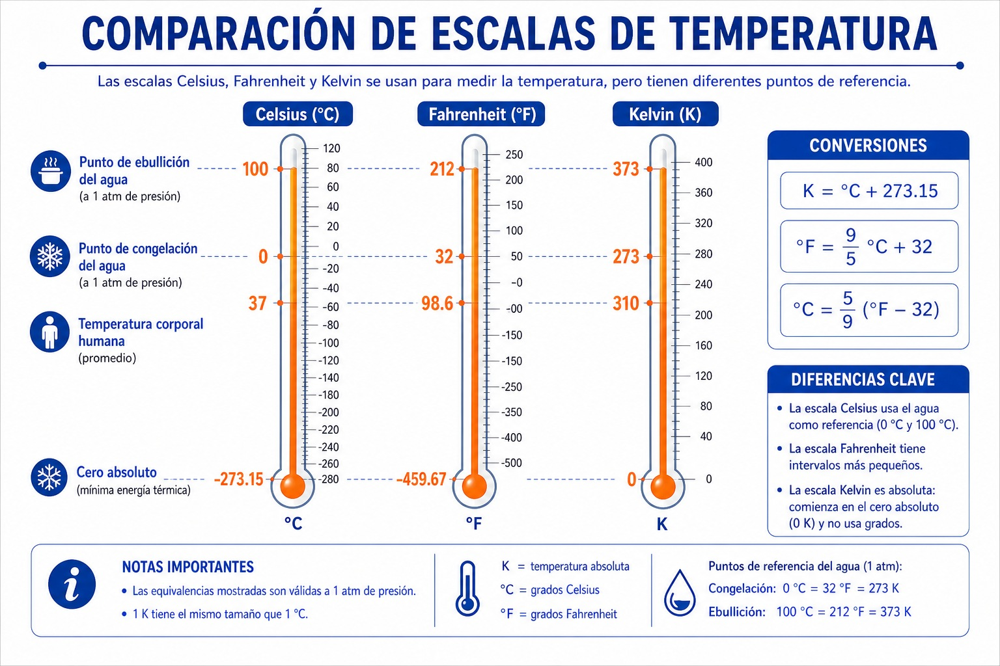
Cambiar de escala sin perder significado es parte del cálculo físico.
Unidad 4 / Termodinámica
En el caso del coche F1, escalas termométricas y dilatación deja de ser una definición de cuaderno: se convierte en una forma de decidir qué medir, qué comparar y qué cambio del prototipo se puede justificar.
Escalas termométricas y dilatación se usa para traducir una situación del coche en una magnitud medible.
Trabajar con física es como leer la pista por capas: primero ubicas la situación, luego eliges el dato y al final verificas el cambio.
Calor latente: Q = mL. Q en J; m es masa; L es calor latente.
Dilatación lineal: ΔL = αL0ΔT. Antes de sustituir, revisa que las unidades sean compatibles.
Compara Escalas termométricas y dilatación en un prototipo lento y en un prototipo rápido. Usa como criterios: variable medida, unidad, gráfica esperada, fórmula útil y decisión de diseño.
| Criterio | Prototipo lento | Prototipo rápido | Decisión |
|---|---|---|---|
| Variable medida | |||
| Unidad | |||
| Gráfica o diagrama | |||
| Fórmula útil |
Unidad 4 / Termodinámica
En el caso del coche F1, calor específico y conductividad deja de ser una definición de cuaderno: se convierte en una forma de decidir qué medir, qué comparar y qué cambio del prototipo se puede justificar.
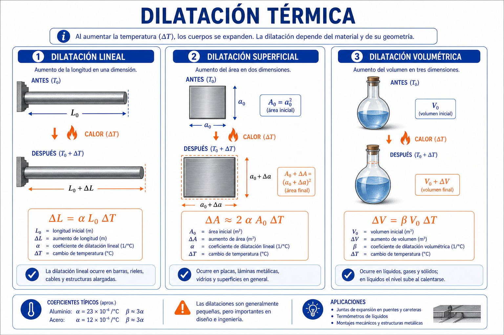
Cada material responde distinto al mismo calor recibido.
Construye una versión pequeña del caso: elige una medición relacionada con calor específico y conductividad, anota unidad, instrumento y cómo la usarías para mejorar el coche.
Unidad 4 / Termodinámica
En el caso del coche F1, calor específico y conductividad deja de ser una definición de cuaderno: se convierte en una forma de decidir qué medir, qué comparar y qué cambio del prototipo se puede justificar.
Calor específico y conductividad se usa para traducir una situación del coche en una magnitud medible.
Trabajar con física es como leer la pista por capas: primero ubicas la situación, luego eliges el dato y al final verificas el cambio.
Dilatación lineal: ΔL = αL0ΔT. ΔL y L0 en m; α en 1/°C; ΔT en °C.
Gas ideal: PV = nRT. Antes de sustituir, revisa que las unidades sean compatibles.
1. ¿Qué dato de calor específico y conductividad pedirías antes de aceptar una mejora del coche?
2. ¿Qué error de medición podría cambiar la conclusión?
3. ¿Cómo explicarías el resultado a alguien que no vio el experimento?
Unidad 4 / Termodinámica
En el caso del coche F1, conducción, convección y radiación deja de ser una definición de cuaderno: se convierte en una forma de decidir qué medir, qué comparar y qué cambio del prototipo se puede justificar.
La energía térmica viaja por contacto, movimiento de fluido o radiación.
Unidad 4 / Termodinámica
En el caso del coche F1, conducción, convección y radiación deja de ser una definición de cuaderno: se convierte en una forma de decidir qué medir, qué comparar y qué cambio del prototipo se puede justificar.
Conducción, convección y radiación se usa para traducir una situación del coche en una magnitud medible.
Trabajar con física es como leer la pista por capas: primero ubicas la situación, luego eliges el dato y al final verificas el cambio.
Gas ideal: PV = nRT. P, V, n, R y T deben estar en unidades compatibles; T en K.
Kelvin: K = °C + 273.15. Antes de sustituir, revisa que las unidades sean compatibles.
Redacta una explicación breve de conducción, convección y radiación. Debe contener una analogía, una magnitud con unidad, una fórmula o diagrama y una decisión para el Equipo F1 Albatros.
Unidad 4 / Termodinámica
En el caso del coche F1, cambios de fase y calor latente deja de ser una definición de cuaderno: se convierte en una forma de decidir qué medir, qué comparar y qué cambio del prototipo se puede justificar.
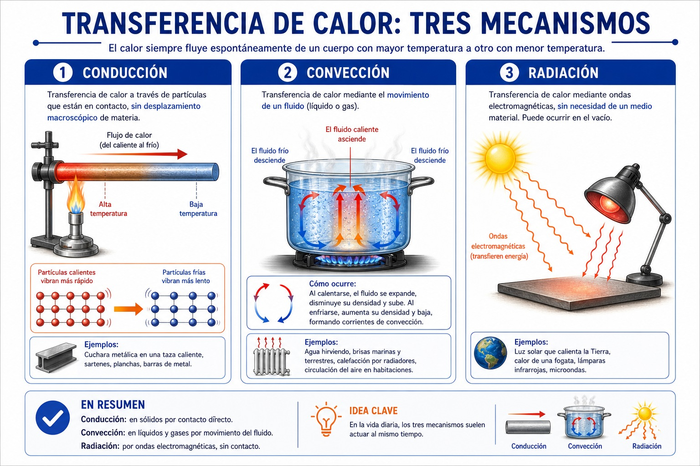
En un cambio de fase la energía trabaja aunque la temperatura parezca quieta.
Construye una versión pequeña del caso: elige una medición relacionada con cambios de fase y calor latente, anota unidad, instrumento y cómo la usarías para mejorar el coche.
Unidad 4 / Termodinámica
En el caso del coche F1, cambios de fase y calor latente deja de ser una definición de cuaderno: se convierte en una forma de decidir qué medir, qué comparar y qué cambio del prototipo se puede justificar.
Cambios de fase y calor latente se usa para traducir una situación del coche en una magnitud medible.
Trabajar con física es como leer la pista por capas: primero ubicas la situación, luego eliges el dato y al final verificas el cambio.
Kelvin: K = °C + 273.15. La temperatura absoluta se expresa en kelvin para gases.
Fahrenheit: °F = 9/5 °C + 32. Antes de sustituir, revisa que las unidades sean compatibles.
Usa la relación K = °C + 273.15 para crear un dato del coche F1. Debes escribir fórmula, sustitución, resultado y unidad final.
Unidad 4 / Termodinámica
En el caso del coche F1, curvas de calentamiento deja de ser una definición de cuaderno: se convierte en una forma de decidir qué medir, qué comparar y qué cambio del prototipo se puede justificar.
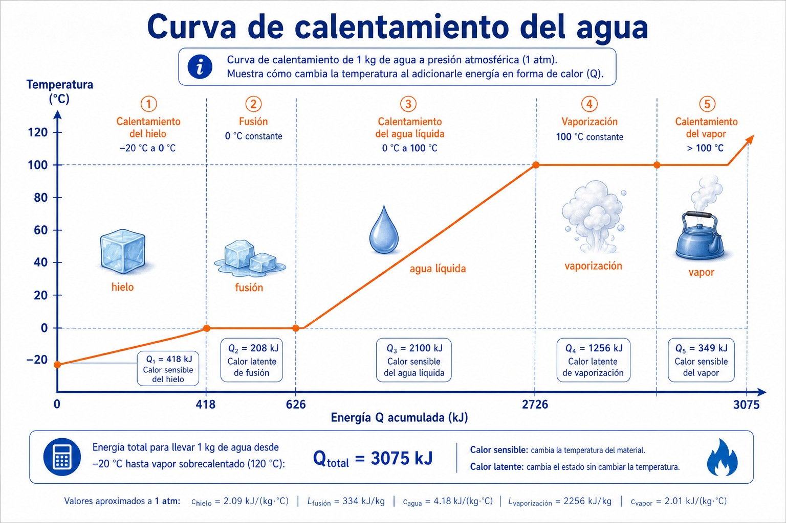
Una meseta en la curva no es pausa: es energía cambiando el estado.
Unidad 4 / Termodinámica
En el caso del coche F1, curvas de calentamiento deja de ser una definición de cuaderno: se convierte en una forma de decidir qué medir, qué comparar y qué cambio del prototipo se puede justificar.
Curvas de calentamiento se usa para traducir una situación del coche en una magnitud medible.
Trabajar con física es como leer la pista por capas: primero ubicas la situación, luego eliges el dato y al final verificas el cambio.
Fahrenheit: °F = 9/5 °C + 32. Convierte escalas cuando el instrumento reporte otra unidad.
Calor sensible: Q = mcΔT. Antes de sustituir, revisa que las unidades sean compatibles.
Completa la tabla para estudiar curvas de calentamiento. Registra un ejemplo del coche, la magnitud, la unidad correcta y una conclusión breve.
| Ejemplo del caso | Magnitud | Unidad | Conclusión |
|---|---|---|---|
Unidad 4 / Termodinámica
En el caso del coche F1, primera y segunda ley de la termodinámica deja de ser una definición de cuaderno: se convierte en una forma de decidir qué medir, qué comparar y qué cambio del prototipo se puede justificar.
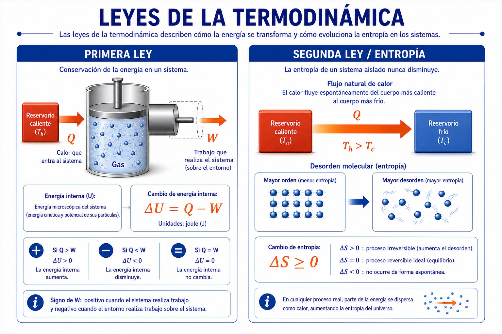
La eficiencia obliga a preguntar qué energía queda disponible para trabajo útil.
Unidad 4 / Termodinámica
En el caso del coche F1, primera y segunda ley de la termodinámica deja de ser una definición de cuaderno: se convierte en una forma de decidir qué medir, qué comparar y qué cambio del prototipo se puede justificar.
Primera y segunda ley de la termodinámica se usa para traducir una situación del coche en una magnitud medible.
Trabajar con física es como leer la pista por capas: primero ubicas la situación, luego eliges el dato y al final verificas el cambio.
Calor sensible: Q = mcΔT. Q en J; m en kg o g según c; ΔT en °C o K.
Calor latente: Q = mL. Antes de sustituir, revisa que las unidades sean compatibles.
Relaciona la Columna A con la Columna B. Escribe parejas en formato A-__, B-__, C-__, D-__. Usa la teoría de primera y segunda ley de la termodinámica para justificar una pareja.
| Columna A: letras | Columna B: números |
|---|---|
| A. Magnitud física | 1. Se escribe antes de sustituir valores. |
| B. Unidad compatible | 2. Puede ser gráfica, vector, tabla o ecuación. |
| C. Representación útil | 3. Debe coincidir con la fórmula usada. |
| D. Error frecuente | 4. Confundir escalar con vector o mezclar unidades. |
Unidad 4 / Termodinámica
En el caso del coche F1, teoría cinética y gases ideales deja de ser una definición de cuaderno: se convierte en una forma de decidir qué medir, qué comparar y qué cambio del prototipo se puede justificar.
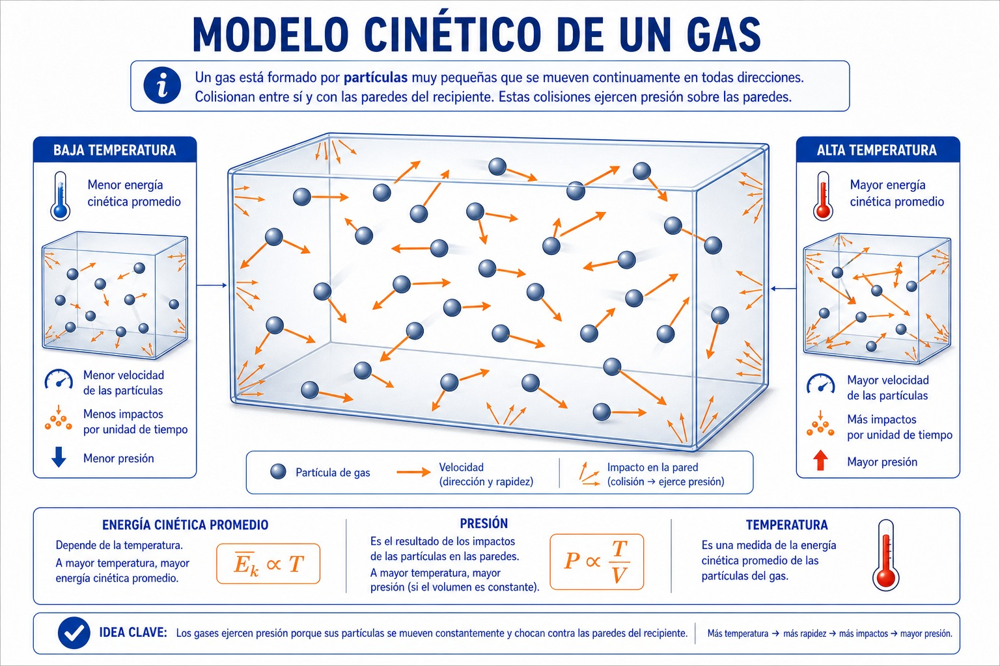
Un gas se entiende mejor cuando presión, volumen y temperatura se leen juntos.
Unidad 4 / Termodinámica
En el caso del coche F1, teoría cinética y gases ideales deja de ser una definición de cuaderno: se convierte en una forma de decidir qué medir, qué comparar y qué cambio del prototipo se puede justificar.
Teoría cinética y gases ideales se usa para traducir una situación del coche en una magnitud medible.
Trabajar con física es como leer la pista por capas: primero ubicas la situación, luego eliges el dato y al final verificas el cambio.
Calor latente: Q = mL. Q en J; m es masa; L es calor latente.
Dilatación lineal: ΔL = αL0ΔT. Antes de sustituir, revisa que las unidades sean compatibles.
Compara Teoría cinética y gases ideales en un prototipo lento y en un prototipo rápido. Usa como criterios: variable medida, unidad, gráfica esperada, fórmula útil y decisión de diseño.
| Criterio | Prototipo lento | Prototipo rápido | Decisión |
|---|---|---|---|
| Variable medida | |||
| Unidad | |||
| Gráfica o diagrama | |||
| Fórmula útil |
Unidad 4 / Termodinámica
Una fórmula no es una receta para poner números: expresa qué magnitudes se relacionan y en qué unidades deben estar. Si una unidad no coincide, primero se convierte y después se calcula.
La temperatura absoluta se expresa en kelvin para gases.
Convierte escalas cuando el instrumento reporte otra unidad.
Q en J; m en kg o g según c; ΔT en °C o K.
Q en J; m es masa; L es calor latente.
ΔL y L0 en m; α en 1/°C; ΔT en °C.
P, V, n, R y T deben estar en unidades compatibles; T en K.
Unidad 4 / Termodinámica
Resuelve con fórmula, despeje cuando sea necesario, sustitución, resultado, unidades y comprobación del sentido físico.
1. Convierte 22 °C, 35 °C y 45 °C a kelvin. Explica por qué se suma 273.15.
2. Calcula Q para 80 g de material con c = 0.90 J/g°C y ΔT = 18 °C.
Unidad 4 / Termodinámica
Resuelve con fórmula, despeje cuando sea necesario, sustitución, resultado, unidades y comprobación del sentido físico.
3. Una varilla de 0.15 m cambia 25 °C. Usa α = 23 x 10^-6 1/°C y calcula ΔL.
4. Calcula energía para fundir 0.020 kg de hielo si L = 334000 J/kg.
Unidad 4 / Termodinámica
1. Convierte 25 °C a K.
2. Convierte 40 °C a °F.
3. Calcula Q si m = 100 g, c = 4.18 J/g°C y ΔT = 10 °C.
4. Explica por qué dos objetos pueden tener misma temperatura y distinta energía térmica.
Unidad 4 / Termodinámica
5. Calcula dilatación si α = 12 x 10^-6 1/°C, L0 = 0.20 m y ΔT = 30 °C.
6. Describe conducción, convección y radiación con ejemplos del prototipo.
7. Calcula calor latente si m = 0.05 kg y L = 334000 J/kg.
8. Interpreta una curva de calentamiento con meseta.
Unidad 4 / Termodinámica
9. Explica la primera ley con Q, W y ΔU.
10. Convierte 30 °C a K y úsalo en PV = nRT.
11. Describe cómo medir temperatura sin tocar una pieza caliente.
12. Propón una mejora para reducir calentamiento por fricción.
Unidad 4 / Termodinámica
Al terminar la unidad, el estudiante puede distinguir temperatura, calor, transferencia y energía interna en situaciones del prototipo.
Entrega una hoja con evidencia, cálculo, error posible y decisión para el Equipo F1 Albatros.
Unidad 5 / Ondas y Sonido
El coche más veloz no siempre es el mejor: un prototipo puede vibrar, sonar demasiado o revelar fallas por su frecuencia dominante. El equipo aprende a escuchar datos.
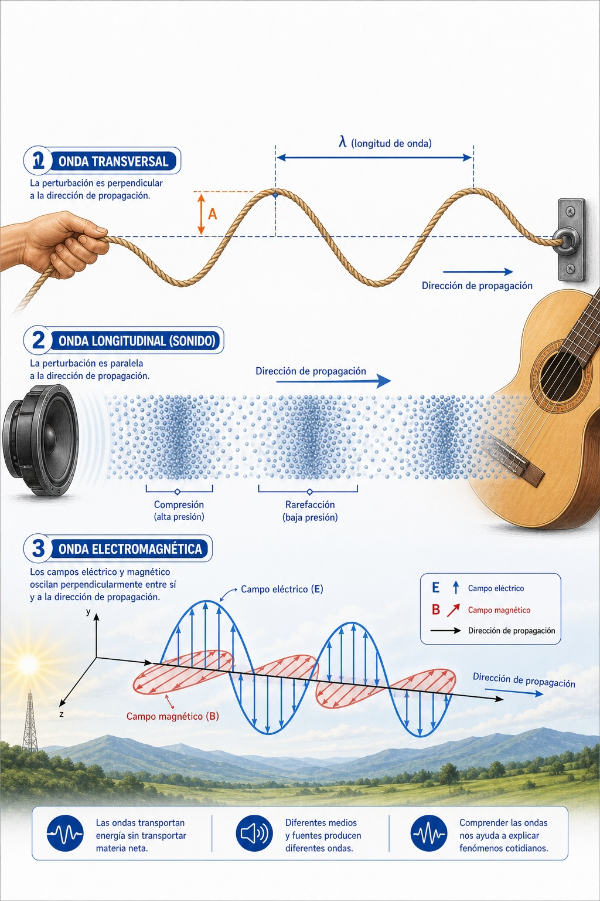
Las ondas permiten estudiar vibración, reflexión, interferencia, sonido y Doppler como evidencia del comportamiento del prototipo.
Antes de resolver, escribe qué variable del coche F1 se debe medir primero y qué instrumento escolar permitiría obtenerla con unidad.
Unidad 5 / Ondas y Sonido
Las ondas explican cómo se transporta energía sin transportar materia de la misma manera. En sonido, vibración y señales, la información viaja en forma de frecuencia, periodo, longitud de onda y amplitud.
En esta unidad el ruido del coche se convierte en dato: se mide, se grafica y se relaciona con vibración, energía y diseño.
1. ¿Qué diferencia hay entre frecuencia y periodo?
2. ¿Por qué una vibración puede revelar una falla del prototipo?
3. ¿Cómo se relacionan longitud de onda y rapidez del sonido?
Unidad 5 / Ondas y Sonido
En el caso del coche F1, ruta de decisiones ondulatorias deja de ser una definición de cuaderno: se convierte en una forma de decidir qué medir, qué comparar y qué cambio del prototipo se puede justificar.
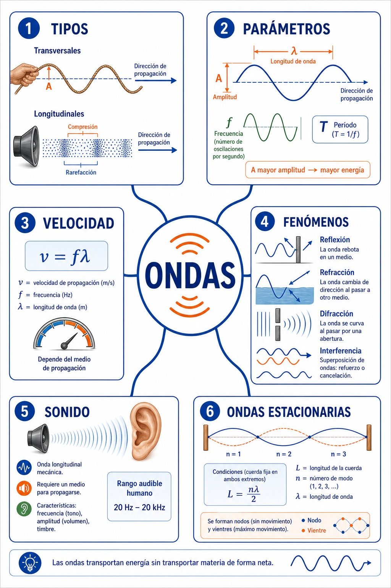
Una vibración ordenada se puede medir, comparar y corregir.
Unidad 5 / Ondas y Sonido
En el caso del coche F1, ondas mecánicas deja de ser una definición de cuaderno: se convierte en una forma de decidir qué medir, qué comparar y qué cambio del prototipo se puede justificar.
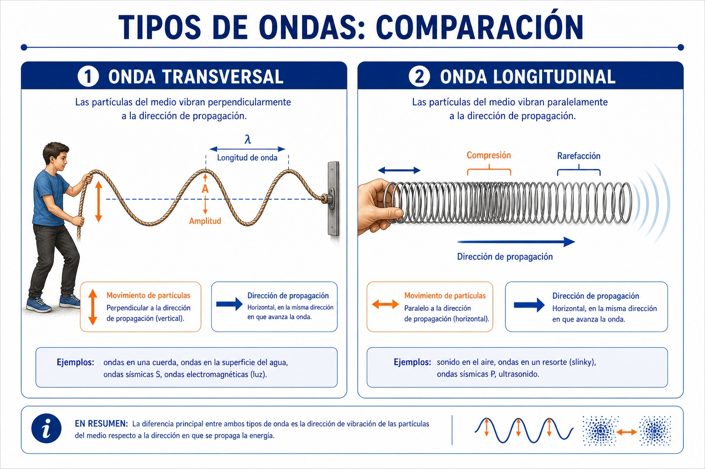
La onda lleva energía aunque el material no viaje con ella hasta la meta.
Construye una versión pequeña del caso: elige una medición relacionada con ondas mecánicas, anota unidad, instrumento y cómo la usarías para mejorar el coche.
Unidad 5 / Ondas y Sonido
En el caso del coche F1, ondas mecánicas deja de ser una definición de cuaderno: se convierte en una forma de decidir qué medir, qué comparar y qué cambio del prototipo se puede justificar.
Ondas mecánicas se usa para traducir una situación del coche en una magnitud medible.
Trabajar con física es como leer la pista por capas: primero ubicas la situación, luego eliges el dato y al final verificas el cambio.
Periodo: T = 1 / f. T en segundos; f en hertz.
Frecuencia: f = 1 / T. Antes de sustituir, revisa que las unidades sean compatibles.
Completa la tabla para estudiar ondas mecánicas. Registra un ejemplo del coche, la magnitud, la unidad correcta y una conclusión breve.
| Ejemplo del caso | Magnitud | Unidad | Conclusión |
|---|---|---|---|
Unidad 5 / Ondas y Sonido
En el caso del coche F1, parámetros de una onda deja de ser una definición de cuaderno: se convierte en una forma de decidir qué medir, qué comparar y qué cambio del prototipo se puede justificar.
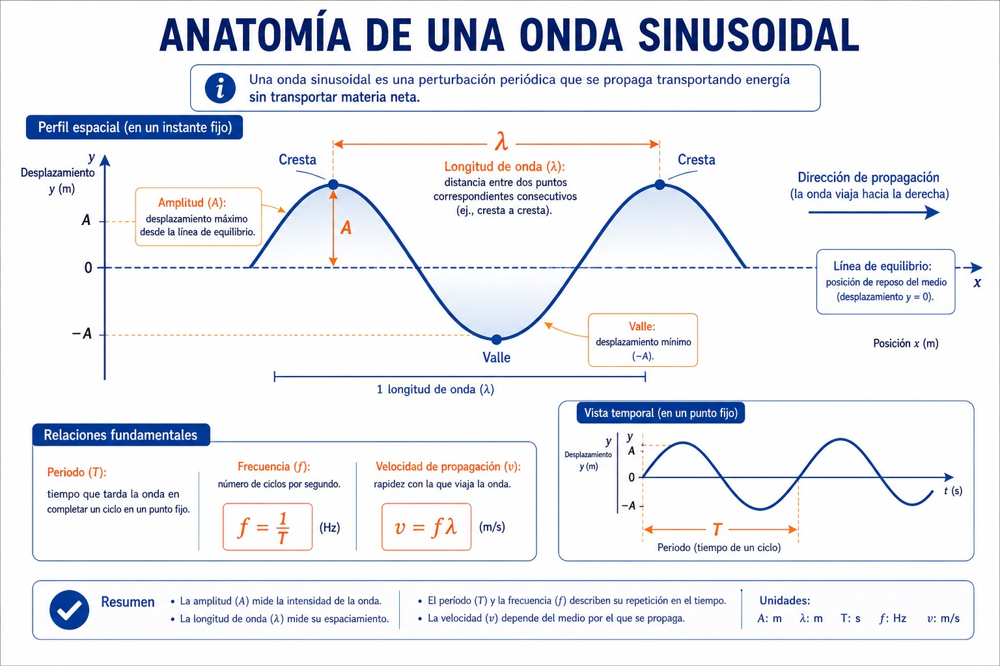
Frecuencia, periodo y longitud de onda son tres formas de contar el mismo ritmo.
Unidad 5 / Ondas y Sonido
En el caso del coche F1, parámetros de una onda deja de ser una definición de cuaderno: se convierte en una forma de decidir qué medir, qué comparar y qué cambio del prototipo se puede justificar.
Parámetros de una onda se usa para traducir una situación del coche en una magnitud medible.
Trabajar con física es como leer la pista por capas: primero ubicas la situación, luego eliges el dato y al final verificas el cambio.
Frecuencia: f = 1 / T. f en hertz; T en segundos.
Intensidad: I = P / A. Antes de sustituir, revisa que las unidades sean compatibles.
Relaciona la Columna A con la Columna B. Escribe parejas en formato A-__, B-__, C-__, D-__. Usa la teoría de parámetros de una onda para justificar una pareja.
| Columna A: letras | Columna B: números |
|---|---|
| A. Magnitud física | 1. Se escribe antes de sustituir valores. |
| B. Unidad compatible | 2. Puede ser gráfica, vector, tabla o ecuación. |
| C. Representación útil | 3. Debe coincidir con la fórmula usada. |
| D. Error frecuente | 4. Confundir escalar con vector o mezclar unidades. |
Unidad 5 / Ondas y Sonido
En el caso del coche F1, reflexión y refracción deja de ser una definición de cuaderno: se convierte en una forma de decidir qué medir, qué comparar y qué cambio del prototipo se puede justificar.
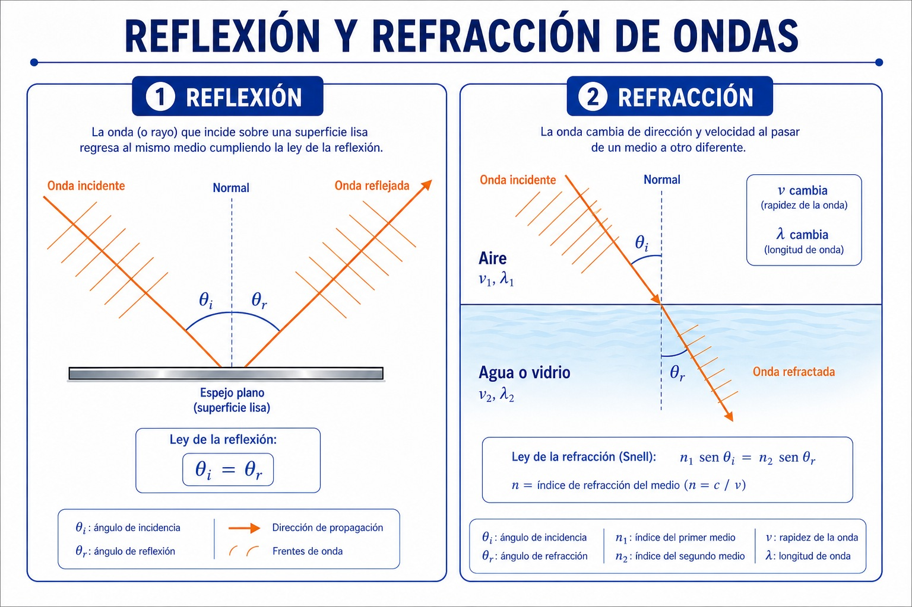
Cuando una onda cambia de medio, cambia también la forma de interpretarla.
Unidad 5 / Ondas y Sonido
En el caso del coche F1, reflexión y refracción deja de ser una definición de cuaderno: se convierte en una forma de decidir qué medir, qué comparar y qué cambio del prototipo se puede justificar.
Reflexión y refracción se usa para traducir una situación del coche en una magnitud medible.
Trabajar con física es como leer la pista por capas: primero ubicas la situación, luego eliges el dato y al final verificas el cambio.
Intensidad: I = P / A. I en W/m²; P en watt; A en m².
Nivel sonoro: β = 10 log(I/I0). Antes de sustituir, revisa que las unidades sean compatibles.
Compara Reflexión y refracción en un prototipo lento y en un prototipo rápido. Usa como criterios: variable medida, unidad, gráfica esperada, fórmula útil y decisión de diseño.
| Criterio | Prototipo lento | Prototipo rápido | Decisión |
|---|---|---|---|
| Variable medida | |||
| Unidad | |||
| Gráfica o diagrama | |||
| Fórmula útil |
Unidad 5 / Ondas y Sonido
En el caso del coche F1, difracción e interferencia deja de ser una definición de cuaderno: se convierte en una forma de decidir qué medir, qué comparar y qué cambio del prototipo se puede justificar.
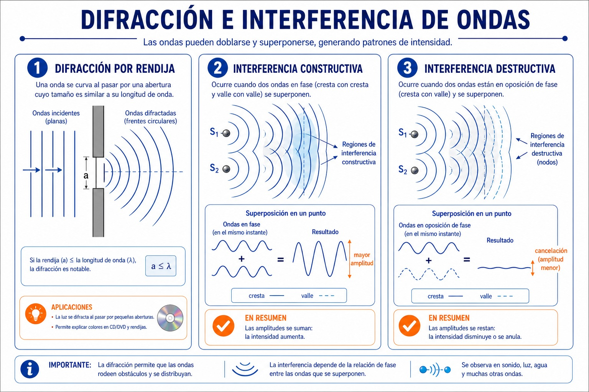
Dos ondas pueden reforzarse o debilitarse sin tocar piezas del coche.
Unidad 5 / Ondas y Sonido
En el caso del coche F1, difracción e interferencia deja de ser una definición de cuaderno: se convierte en una forma de decidir qué medir, qué comparar y qué cambio del prototipo se puede justificar.
Difracción e interferencia se usa para traducir una situación del coche en una magnitud medible.
Trabajar con física es como leer la pista por capas: primero ubicas la situación, luego eliges el dato y al final verificas el cambio.
Nivel sonoro: β = 10 log(I/I0). β en dB; I0 = 1 x 10^-12 W/m².
Tubo abierto: fn = n v / 2L. Antes de sustituir, revisa que las unidades sean compatibles.
1. ¿Qué dato de difracción e interferencia pedirías antes de aceptar una mejora del coche?
2. ¿Qué error de medición podría cambiar la conclusión?
3. ¿Cómo explicarías el resultado a alguien que no vio el experimento?
Unidad 5 / Ondas y Sonido
En el caso del coche F1, energía, intensidad y sonido deja de ser una definición de cuaderno: se convierte en una forma de decidir qué medir, qué comparar y qué cambio del prototipo se puede justificar.
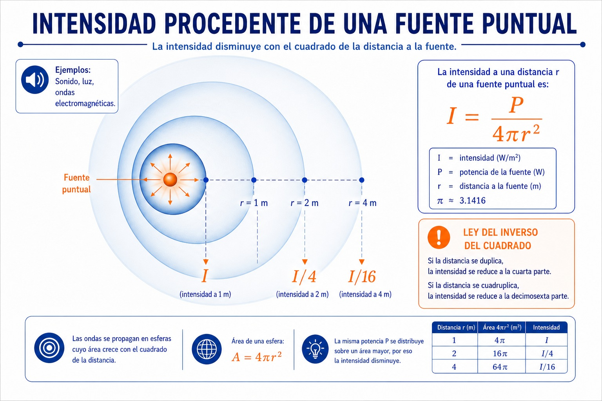
El ruido tiene números: intensidad, frecuencia y energía transportada.
Unidad 5 / Ondas y Sonido
En el caso del coche F1, energía, intensidad y sonido deja de ser una definición de cuaderno: se convierte en una forma de decidir qué medir, qué comparar y qué cambio del prototipo se puede justificar.
Energía, intensidad y sonido se usa para traducir una situación del coche en una magnitud medible.
Trabajar con física es como leer la pista por capas: primero ubicas la situación, luego eliges el dato y al final verificas el cambio.
Tubo abierto: fn = n v / 2L. fn en Hz; v en m/s; L en m; n entero positivo.
Rapidez de onda: v = fλ. Antes de sustituir, revisa que las unidades sean compatibles.
Redacta una explicación breve de energía, intensidad y sonido. Debe contener una analogía, una magnitud con unidad, una fórmula o diagrama y una decisión para el Equipo F1 Albatros.
Unidad 5 / Ondas y Sonido
En el caso del coche F1, ondas estacionarias y efecto doppler deja de ser una definición de cuaderno: se convierte en una forma de decidir qué medir, qué comparar y qué cambio del prototipo se puede justificar.
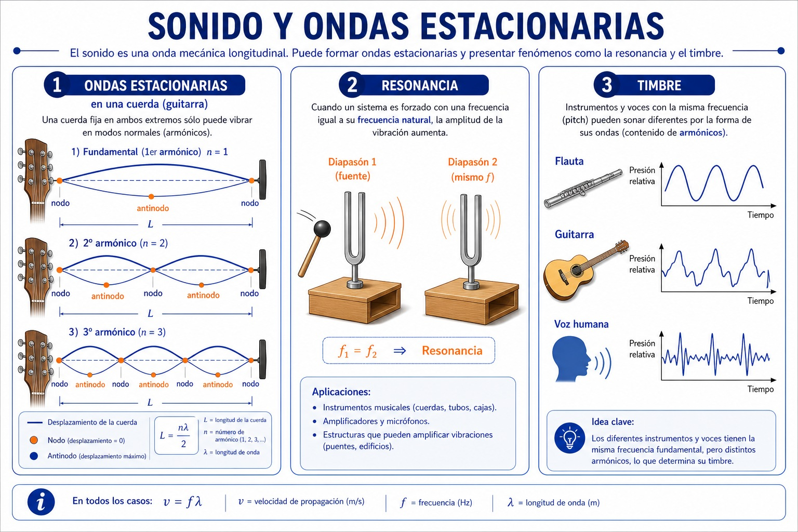
El Doppler recuerda que escuchar también depende del movimiento relativo.
Unidad 5 / Ondas y Sonido
En el caso del coche F1, ondas estacionarias y efecto doppler deja de ser una definición de cuaderno: se convierte en una forma de decidir qué medir, qué comparar y qué cambio del prototipo se puede justificar.
Ondas estacionarias y efecto Doppler se usa para traducir una situación del coche en una magnitud medible.
Trabajar con física es como leer la pista por capas: primero ubicas la situación, luego eliges el dato y al final verificas el cambio.
Rapidez de onda: v = fλ. v en m/s; f en Hz; λ en m.
Periodo: T = 1 / f. Antes de sustituir, revisa que las unidades sean compatibles.
Usa la relación v = fλ para crear un dato del coche F1. Debes escribir fórmula, sustitución, resultado y unidad final.
Unidad 5 / Ondas y Sonido
Una fórmula no es una receta para poner números: expresa qué magnitudes se relacionan y en qué unidades deben estar. Si una unidad no coincide, primero se convierte y después se calcula.
v en m/s; f en Hz; λ en m.
T en segundos; f en hertz.
f en hertz; T en segundos.
I en W/m²; P en watt; A en m².
β en dB; I0 = 1 x 10^-12 W/m².
fn en Hz; v en m/s; L en m; n entero positivo.
Unidad 5 / Ondas y Sonido
Resuelve con fórmula, despeje cuando sea necesario, sustitución, resultado, unidades y comprobación del sentido físico.
1. El sonido del prototipo tiene f = 850 Hz. Calcula λ con v = 343 m/s.
2. Una vibración tiene T = 0.004 s. Calcula frecuencia.
Unidad 5 / Ondas y Sonido
Resuelve con fórmula, despeje cuando sea necesario, sustitución, resultado, unidades y comprobación del sentido físico.
3. Una onda mide λ = 0.50 m y f = 12 Hz. Calcula rapidez.
4. Calcula intensidad si una fuente de 0.05 W distribuye energía en 2.5 m².
Unidad 5 / Ondas y Sonido
1. Calcula longitud de onda si v = 343 m/s y f = 686 Hz.
2. Calcula periodo si f = 50 Hz.
3. Calcula frecuencia si T = 0.02 s.
4. Explica por qué el sonido necesita un medio material.
Unidad 5 / Ondas y Sonido
5. Distingue reflexión y refracción con ejemplos de onda.
6. Describe interferencia constructiva y destructiva.
7. Calcula intensidad si P = 0.02 W y A = 4 m².
8. Explica qué indica un aumento de amplitud en una vibración.
Unidad 5 / Ondas y Sonido
9. Relaciona frecuencia dominante con ruido del prototipo.
10. Describe un caso donde aparezca efecto Doppler.
11. Propón cómo usar Audacity o una app de audio para registrar sonido.
12. Explica por qué reducir vibración puede mejorar energía útil.
Unidad 5 / Ondas y Sonido
Al terminar la unidad, el estudiante puede leer el sonido como evidencia física y no solo como molestia.
Entrega una hoja con evidencia, cálculo, error posible y decisión para el Equipo F1 Albatros.
Cierre del semestre
El examen exige unir datos de movimiento, fuerzas, energía, temperatura y sonido para tomar decisiones sobre el coche F1 escolar.
1. Un coche recorre 18 m en 1.2 s desde reposo. Estima aceleración promedio y velocidad final si el movimiento se considera uniformemente acelerado.
2. Dibuja el diagrama de cuerpo libre del coche al arrancar y explica qué fuerzas favorecen o se oponen al movimiento.
3. Calcula la energía cinética de un prototipo de 0.055 kg que alcanza 6.8 m/s y relaciona el resultado con pérdidas por fricción.
4. Una pieza se calienta de 22 °C a 45 °C. Convierte ambas temperaturas a kelvin y explica por qué la escala importa en gases ideales.
Cierre del semestre
5. Un ruido dominante tiene frecuencia de 850 Hz. Si la rapidez del sonido es 343 m/s, calcula la longitud de onda y propón una mejora.
6. Redacta una decisión técnica final: ¿qué modificarías primero, masa, fricción, alineación, ventilación o vibración? Justifica con evidencia.
Bibliografía y recursos
Usa estas fuentes para ampliar teoría, revisar simulaciones o contrastar constantes. Registra la liga consultada y el dato que tomaste.
| Recurso | Uso sugerido | Liga |
|---|---|---|
| OpenStax University Physics | Lectura de mecánica, energía, termodinámica y ondas | https://openstax.org/details/books/university-physics-volume-1 |
| PhET Física | Simulaciones de movimiento, fuerzas, energía, ondas y calor | https://phet.colorado.edu/es/simulations/filter?subjects=physics |
| NASA Glenn Beginner's Guide | Fuerzas, movimiento, aerodinámica y mediciones | https://www.grc.nasa.gov/www/k-12/airplane/ |
| NIST Constants | Constantes físicas de referencia | https://physics.nist.gov/cuu/Constants/ |
| Khan Academy Física | Repaso guiado de conceptos | https://es.khanacademy.org/science/physics |
Índice analítico
Este índice ayuda a volver a los puntos de mayor uso en actividades y cálculos.
| Concepto | Unidad | Uso |
|---|---|---|
| Aceleración | U1 | Cambio de velocidad por unidad de tiempo. |
| Fuerza neta | U2 | Suma vectorial responsable de acelerar el sistema. |
| Trabajo | U3 | Transferencia de energía por fuerza a lo largo de una distancia. |
| Calor específico | U4 | Energía necesaria para cambiar temperatura por masa. |
| Frecuencia | U5 | Ciclos por segundo de una onda o vibración. |
| Doppler | U5 | Cambio aparente de frecuencia por movimiento relativo. |
Portada de trimestre 1
Cinemática y dinámica del coche F1 escolar.
Portada de trimestre 2
Trabajo, energía, fricción, temperatura y transferencia térmica.
Portada de trimestre 3
Vibraciones, sonido, análisis de datos y decisión final.
Material complementario
Antes de calcular, revisa que las magnitudes estén en unidades compatibles.
| Magnitud | Valor o conversión | Uso |
|---|---|---|
| Gravedad | g = 9.8 m/s² | Caída libre, peso y energía potencial |
| Rapidez del sonido | v ≈ 343 m/s a 20 °C | Ondas sonoras y Doppler |
| Kelvin | K = °C + 273.15 | Gases ideales y temperatura absoluta |
| Newton | 1 N = 1 kg·m/s² | Fuerza y segunda ley |
| Joule | 1 J = 1 N·m | Trabajo y energía |
| Watt | 1 W = 1 J/s | Potencia |
Lectura complementaria 1
La física moderna avanzó cuando el movimiento dejó de explicarse solo con impresiones. Galileo comparó tiempos, distancias y pendientes para estudiar cómo cambian las velocidades. Esa idea sigue vigente: si el coche parece rápido, todavía falta registrar cuánto recorre y en cuánto tiempo.
En el proyecto F1, una gráfica x-t o v-t permite discutir con evidencia. La medición no hace perfecto al prototipo, pero vuelve posible decidir qué modificación probar después.
1. ¿Por qué una gráfica puede defender mejor una conclusión que una opinión?
2. ¿Qué dato mínimo necesitas para estimar velocidad promedio?
Lectura complementaria 2
Un prototipo no solo se mueve: transforma energía. Parte se vuelve movimiento útil y parte se disipa en fricción, calor, vibración o ruido. Por eso mejorar un coche no significa únicamente hacerlo más ligero; también implica reducir pérdidas.
Cuando calculas trabajo, energía cinética o potencia, conviertes una historia de pista en una comparación técnica. La energía ayuda a explicar por qué dos coches con apariencia similar pueden tener desempeños distintos.
1. ¿Qué pérdida de energía sería más fácil observar en el aula?
2. ¿Cómo conectarías fricción, calor y sonido en un mismo reporte?